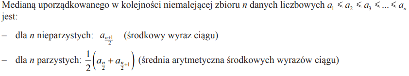
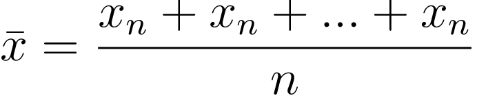
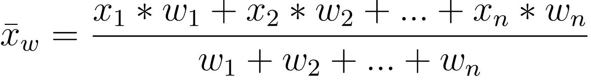
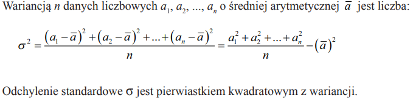

Dodatkowe algorytmy
Dodatkowe algorytmy przydatne na maturze z informatyki: średnie, mediana, moda, silnia, symbol Newtona, algorytmy tekstowe (KMP, Boyer-Moore, Karp-Rabin, Manacher) i geometria w Pythonie.
Algorytmy numeryczne
7 algorytmów
Algorytmy arytmetyczne
10 algorytmów
Algorytmy na łańcuchach
13 algorytmów
- 3.1Zliczanie znaków w ciągu
- 3.2Zliczanie słów w łańcuchu
- 3.3Najdłuższe słowoWyszukiwanie najdłuższego słowa w łańcuchu
- 3.4Najdłuższy wspólny podłańcuchWyszukiwanie najdłuższego wspólnego podłańcucha
- 3.5Najdłuższy wspólny podciąg (LCS)Wyszukiwanie najdłuższego wspólnego podciągu
- 3.6Krotność znaków w łańcuchu
- 3.7Naprzemienne wielkie i małe literyNaprzemienność dużych i małych liter w tekście
- 3.8Algorytm Manachera
- 3.9Wyszukiwanie naiwneAlgorytm N (naiwny)
- 3.10Algorytm Knutha-Morrisa-Pratta
- 3.11Algorytm Boyer-Moore'a
- 3.12Algorytm Galila-Seiferasa
- 3.13Algorytm Karpa-Rabina
Kombinatoryka
2 algorytmy
Geometria
8 algorytmów
- 5.1Przecięcie okręgu z prostąWyznaczenie punktów przecięcia okręgu z prostą
- 5.2Przecięcie dwóch prostychWyznaczanie punktu przecięcia dwóch prostych
- 5.3Punkt na odcinkuPrzynależność punktu do odcinka
- 5.4Punkt w wielokąciePrzynależność punktu do wielokąta
- 5.5Środek odcinka
- 5.6Długość odcinka
- 5.7Brakujący wierzchołek figuryZnajdowanie punktu tworzącego figurę
- 5.8Proste prostopadłe i równoległeSprawdzanie czy proste są prostopadłe / równoległe
Algorytmy numeryczne
Suma liczb od a do b
def suma(a, b):
return sum(range(a, b + 1))def suma(a, b):
wynik = 0
for i in range(a, b + 1):
wynik += i
return wynik#include <print>
// long long, bo suma szybko przekracza zakres int
long long suma(long long a, long long b) {
long long wynik = 0;
for (long long i = a; i <= b; i++) {
wynik += i;
}
return wynik;
}
int main() {
std::println("{}", suma(1, 100)); // 5050
std::println("{}", suma(-3, 5)); // 9
}public class Suma {
// long, bo suma szybko przekracza zakres int
static long suma(long a, long b) {
long wynik = 0;
for (long i = a; i <= b; i++) {
wynik += i;
}
return wynik;
}
public static void main(String[] args) {
System.out.println(suma(1, 100)); // 5050
System.out.println(suma(-3, 5)); // 9
}
}Algorytmy numeryczne
Iloczyn liczb od a do b
def iloczyn(a, b):
wynik = 1
for i in range(a, b + 1):
wynik *= i
return wynik#include <print>
// long long mieści najwyżej ok. 9.2 * 10^18 (np. iloczyn 1..20),
// dla większych wyników nastąpi przepełnienie (Python liczy dowolnie duże liczby)
long long iloczyn(long long a, long long b) {
long long wynik = 1;
for (long long i = a; i <= b; i++) {
wynik *= i;
}
return wynik;
}
int main() {
std::println("{}", iloczyn(1, 5)); // 120
std::println("{}", iloczyn(3, 6)); // 360
std::println("{}", iloczyn(1, 20)); // 2432902008176640000
}public class Iloczyn {
// long mieści najwyżej ok. 9.2 * 10^18 (np. iloczyn 1..20),
// dla większych wyników trzeba użyć java.math.BigInteger
static long iloczyn(long a, long b) {
long wynik = 1;
for (long i = a; i <= b; i++) {
wynik *= i;
}
return wynik;
}
public static void main(String[] args) {
System.out.println(iloczyn(1, 5)); // 120
System.out.println(iloczyn(3, 6)); // 360
System.out.println(iloczyn(1, 20)); // 2432902008176640000
}
}Algorytmy numeryczne
Czy liczba jest parzysta
def is_even(x):
if x % 2 == 0:
return True
return False#include <print>
bool is_even(long long x) {
if (x % 2 == 0) { // dla ujemnych x % 2 daje 0 albo -1, więc porównujemy z 0
return true;
}
return false;
}
int main() {
std::println("{}", is_even(10)); // true
std::println("{}", is_even(7)); // false
std::println("{}", is_even(-4)); // true
}public class Parzysta {
static boolean isEven(long x) {
if (x % 2 == 0) { // dla ujemnych x % 2 daje 0 albo -1, więc porównujemy z 0
return true;
}
return false;
}
public static void main(String[] args) {
System.out.println(isEven(10)); // true
System.out.println(isEven(7)); // false
System.out.println(isEven(-4)); // true
}
}def divisible(x, n):
if n == 0: # przez zero nie dzielimy
return False
if x % n == 0:
return True
return False#include <print>
bool divisible(long long x, long long n) {
if (n == 0) { // przez zero nie dzielimy (w C++ x % 0 to błąd programu)
return false;
}
if (x % n == 0) {
return true;
}
return false;
}
int main() {
std::println("{}", divisible(12, 4)); // true
std::println("{}", divisible(12, 5)); // false
std::println("{}", divisible(12, 0)); // false
}public class Podzielnosc {
static boolean divisible(long x, long n) {
if (n == 0) { // przez zero nie dzielimy (w Javie x % 0 rzuca ArithmeticException)
return false;
}
if (x % n == 0) {
return true;
}
return false;
}
public static void main(String[] args) {
System.out.println(divisible(12, 4)); // true
System.out.println(divisible(12, 5)); // false
System.out.println(divisible(12, 0)); // false
}
}Liczba x jest wielokrotnością n, gdy x = k * n dla pewnej liczby całkowitej k, czyli gdy x % n == 0. Jedyną wielokrotnością zera jest samo zero.
def is_multiple(x, n):
if n == 0:
return x == 0
if x % n == 0:
return True
return False
print(is_multiple(333, 3)) # True, bo 333 = 111 * 3
print(is_multiple(3, 333)) # False#include <print>
bool is_multiple(long long x, long long n) {
if (n == 0) {
return x == 0;
}
if (x % n == 0) {
return true;
}
return false;
}
int main() {
std::println("{}", is_multiple(333, 3)); // true, bo 333 = 111 * 3
std::println("{}", is_multiple(3, 333)); // false
}public class Wielokrotnosc {
static boolean isMultiple(long x, long n) {
if (n == 0) {
return x == 0;
}
if (x % n == 0) {
return true;
}
return false;
}
public static void main(String[] args) {
System.out.println(isMultiple(333, 3)); // true, bo 333 = 111 * 3
System.out.println(isMultiple(3, 333)); // false
}
}Przechodzimy raz po wszystkich elementach i zapamiętujemy największy oraz najmniejszy element widziany do tej pory. Dla pustej listy zwracamy None.
def min_max(lista):
if len(lista) == 0:
return None, None
najmniejszy = lista[0]
najwiekszy = lista[0]
for x in lista:
if x < najmniejszy:
najmniejszy = x
if x > najwiekszy:
najwiekszy = x
return najmniejszy, najwiekszy
print(min_max([4, -2, 7, 7, 0])) # (-2, 7)lista = [4, -2, 7, 7, 0]
print(min(lista), max(lista)) # -2 7#include <algorithm>
#include <optional>
#include <print>
#include <utility>
#include <vector>
// dla pustej listy zwracamy "brak wyniku" (std::nullopt), jak None w Pythonie
std::optional<std::pair<int, int>> min_max(const std::vector<int>& lista) {
if (lista.empty()) {
return std::nullopt;
}
int najmniejszy = lista[0];
int najwiekszy = lista[0];
for (int x : lista) {
if (x < najmniejszy) {
najmniejszy = x;
}
if (x > najwiekszy) {
najwiekszy = x;
}
}
return std::pair{najmniejszy, najwiekszy};
}
int main() {
std::vector<int> lista = {4, -2, 7, 7, 0};
auto wynik = min_max(lista);
if (wynik) {
std::println("{} {}", wynik->first, wynik->second); // -2 7
}
// gotowe funkcje z biblioteki standardowej (lista nie może być pusta)
std::println("{} {}", std::ranges::min(lista), std::ranges::max(lista)); // -2 7
}import java.util.Collections;
import java.util.List;
public class MinMax {
// zwraca tablicę {najmniejszy, największy}, a dla pustej listy null (jak None w Pythonie)
static int[] minMax(List<Integer> lista) {
if (lista.isEmpty()) {
return null;
}
int najmniejszy = lista.get(0);
int najwiekszy = lista.get(0);
for (int x : lista) {
if (x < najmniejszy) {
najmniejszy = x;
}
if (x > najwiekszy) {
najwiekszy = x;
}
}
return new int[] {najmniejszy, najwiekszy};
}
public static void main(String[] args) {
var lista = List.of(4, -2, 7, 7, 0);
int[] wynik = minMax(lista);
System.out.println(wynik[0] + " " + wynik[1]); // -2 7
// gotowe metody (lista nie może być pusta)
System.out.println(Collections.min(lista) + " " + Collections.max(lista)); // -2 7
}
}Obliczamy an dla całkowitego n >= 0, mnożąc a przez siebie n razy (a0 = 1). Szybsze potęgowanie (w czasie log n) jest w pliku algorytmy_wymagania.md.
def potega(a, n):
wynik = 1
for i in range(n):
wynik *= a
return wynik
print(potega(2, 10)) # 1024def potega(a, n):
if n == 0:
return 1
return a * potega(a, n - 1)
print(potega(3, 4)) # 81from math import pow
print(2 ** 10) # 1024
print(pow(2, 10)) # 1024.0 (math.pow zawsze zwraca float)
print(2 ** -2) # 0.25 (operator ** działa też dla ujemnych wykładników)#include <cmath>
#include <print>
// long long mieści wyniki do ok. 9.2 * 10^18 (np. 2^62), większe się przepełnią
long long potega(long long a, int n) { // wersja iteracyjna
long long wynik = 1;
for (int i = 0; i < n; i++) {
wynik *= a;
}
return wynik;
}
long long potega_rek(long long a, int n) { // wersja rekurencyjna
if (n == 0) {
return 1;
}
return a * potega_rek(a, n - 1);
}
int main() {
std::println("{}", potega(2, 10)); // 1024
std::println("{}", potega_rek(3, 4)); // 81
std::println("{}", std::pow(2.0, 10)); // 1024 (std::pow zwraca double)
std::println("{}", std::pow(2.0, -2)); // 0.25
}public class Potegowanie {
// long mieści wyniki do ok. 9.2 * 10^18 (np. 2^62), większe się przepełnią
static long potega(long a, int n) { // wersja iteracyjna
long wynik = 1;
for (int i = 0; i < n; i++) {
wynik *= a;
}
return wynik;
}
static long potegaRek(long a, int n) { // wersja rekurencyjna
if (n == 0) {
return 1;
}
return a * potegaRek(a, n - 1);
}
public static void main(String[] args) {
System.out.println(potega(2, 10)); // 1024
System.out.println(potegaRek(3, 4)); // 81
System.out.println(Math.pow(2, 10)); // 1024.0 (Math.pow zwraca double)
System.out.println(Math.pow(2, -2)); // 0.25
}
}from math import factorial
print(factorial(5))def fact(n):
factorial = 1
if n >= 1:
for i in range(1, n + 1):
factorial = factorial * i
return factorialdef fact(n):
if n < 0:
return None # silnia liczby ujemnej nie istnieje
if n == 0:
return 1 # 0! = 1
return n * fact(n - 1)#include <print>
// unsigned long long mieści silnię najwyżej do 20! = 2432902008176640000,
// dla n > 20 wynik się przepełni (Python liczy dowolnie duże liczby)
unsigned long long fact(int n) { // wersja iteracyjna
unsigned long long silnia = 1;
for (int i = 1; i <= n; i++) {
silnia = silnia * i;
}
return silnia;
}
long long fact_rek(int n) { // wersja rekurencyjna
if (n < 0) {
return -1; // silnia liczby ujemnej nie istnieje
}
if (n == 0) {
return 1; // 0! = 1
}
return n * fact_rek(n - 1);
}
int main() {
std::println("{}", fact(5)); // 120
std::println("{}", fact_rek(5)); // 120
std::println("{}", fact(20)); // 2432902008176640000
}import java.math.BigInteger;
public class Silnia {
// long mieści silnię najwyżej do 20! = 2432902008176640000
static long fact(int n) { // wersja iteracyjna
long silnia = 1;
for (int i = 1; i <= n; i++) {
silnia = silnia * i;
}
return silnia;
}
static long factRek(int n) { // wersja rekurencyjna
if (n < 0) {
return -1; // silnia liczby ujemnej nie istnieje
}
if (n == 0) {
return 1; // 0! = 1
}
return n * factRek(n - 1);
}
// BigInteger liczy dowolnie duże liczby, tak jak int w Pythonie
static BigInteger factBig(int n) {
var silnia = BigInteger.ONE;
for (int i = 1; i <= n; i++) {
silnia = silnia.multiply(BigInteger.valueOf(i));
}
return silnia;
}
public static void main(String[] args) {
System.out.println(fact(5)); // 120
System.out.println(factRek(5)); // 120
System.out.println(fact(20)); // 2432902008176640000
System.out.println(factBig(25)); // 15511210043330985984000000
}
}Algorytmy arytmetyczne
Pierwiastek kwadratowy
from math import sqrt
print(sqrt(4))# sqrt1(liczba) - pierwiastek kwadratowy jako potęga 1/2, dla liczba >= 0
def sqrt1(x):
return x ** (1 / 2)
print(sqrt1(4)) # 2.0#include <cmath>
#include <print>
// pierwiastek kwadratowy jako potęga 1/2, dla x >= 0
double sqrt1(double x) {
return std::pow(x, 1.0 / 2); // 1.0 / 2, bo 1 / 2 na liczbach całkowitych daje 0
}
int main() {
std::println("{}", std::sqrt(4.0)); // 2
std::println("{}", sqrt1(4)); // 2
}public class Pierwiastek {
// pierwiastek kwadratowy jako potęga 1/2, dla x >= 0
static double sqrt1(double x) {
return Math.pow(x, 1.0 / 2); // 1.0 / 2, bo 1 / 2 na liczbach całkowitych daje 0
}
public static void main(String[] args) {
System.out.println(Math.sqrt(4)); // 2.0
System.out.println(sqrt1(4)); // 2.0
}
}Algorytmy arytmetyczne
Pierwiastek n-tego stopnia
Pierwiastek stopnia p to potęga 1/p. Dla liczb ujemnych i nieparzystego p liczymy pierwiastek z -x i zmieniamy znak (samo x ** (1/p) dałoby liczbę zespoloną). Wynik jest przybliżony, np. 27 ** (1/3) to 3.0000000000000004.
def sqrt1(x, p):
if x < 0 and p % 2 == 1:
return -((-x) ** (1 / p))
return x ** (1 / p)
print(sqrt1(16, 4)) # 2.0
print(sqrt1(-8, 3)) # -2.0#include <cmath>
#include <print>
// pierwiastek stopnia p; std::pow z ujemną podstawą i ułamkowym wykładnikiem daje NaN
double sqrt1(double x, int p) {
if (x < 0 && p % 2 == 1) {
return -std::pow(-x, 1.0 / p);
}
return std::pow(x, 1.0 / p);
}
int main() {
std::println("{}", sqrt1(16, 4)); // 2
std::println("{}", sqrt1(-8, 3)); // -2
std::println("{}", sqrt1(27, 3)); // 3 albo 3.0000000000000004 - wynik jest przybliżony
}public class PierwiastekN {
// pierwiastek stopnia p; Math.pow z ujemną podstawą i ułamkowym wykładnikiem daje NaN
static double sqrt1(double x, int p) {
if (x < 0 && p % 2 == 1) {
return -Math.pow(-x, 1.0 / p);
}
return Math.pow(x, 1.0 / p);
}
public static void main(String[] args) {
System.out.println(sqrt1(16, 4)); // 2.0
System.out.println(sqrt1(-8, 3)); // -2.0
System.out.println(sqrt1(27, 3)); // 3.0 albo 3.0000000000000004 - wynik jest przybliżony
}
}Moda to wartość występująca w liście najczęściej. Jeżeli kilka wartości występuje tyle samo razy, wszystkie wersje poniżej zwracają tę, która pojawia się w liście najwcześniej (gdy wszystkie elementy są różne, będzie to pierwszy element). Dla pustej listy zwracamy None.
from collections import Counter
lista = [1, 2, 3, 2, 5]
def moda(lista):
if len(lista) == 0:
return None
return Counter(lista).most_common(1)[0][0]
print(moda(lista)) # 2def moda(lista):
if len(lista) == 0:
return None
return max(lista, key=lista.count)def moda2(T):
maxi = 0
moda = None
n = len(T)
for i in range(n):
count = 0
for j in range(n):
if T[i] == T[j]:
count += 1
if count > maxi:
maxi = count
moda = T[i]
return moda#include <map>
#include <optional>
#include <print>
#include <vector>
// zliczamy wystąpienia w mapie; przy remisie wygrywa wartość, która pojawia się najwcześniej
std::optional<int> moda(const std::vector<int>& lista) {
if (lista.empty()) {
return std::nullopt; // jak None w Pythonie
}
std::map<int, int> ile;
for (int x : lista) {
ile[x]++;
}
int wynik = lista[0];
for (int x : lista) { // idziemy po liście, żeby przy remisie wybrać pierwszą wartość
if (ile[x] > ile[wynik]) {
wynik = x;
}
}
return wynik;
}
// Na teorię - O(n^2)
std::optional<int> moda2(const std::vector<int>& T) {
int maxi = 0;
std::optional<int> moda;
int n = T.size();
for (int i = 0; i < n; i++) {
int count = 0;
for (int j = 0; j < n; j++) {
if (T[i] == T[j]) {
count++;
}
}
if (count > maxi) {
maxi = count;
moda = T[i];
}
}
return moda;
}
int main() {
std::vector<int> lista = {1, 2, 3, 2, 5};
std::println("{}", moda(lista).value()); // 2
std::println("{}", moda2(lista).value()); // 2
std::println("{}", moda({7, 5, 5, 7}).value()); // 7 (remis - pierwsza z nich)
}import java.util.HashMap;
import java.util.List;
public class Moda {
// zliczamy wystąpienia w mapie; przy remisie wygrywa wartość, która pojawia się najwcześniej
static Integer moda(List<Integer> lista) {
if (lista.isEmpty()) {
return null; // jak None w Pythonie
}
var ile = new HashMap<Integer, Integer>();
for (int x : lista) {
ile.merge(x, 1, Integer::sum); // ile[x] += 1
}
int wynik = lista.get(0);
for (int x : lista) { // idziemy po liście, żeby przy remisie wybrać pierwszą wartość
if (ile.get(x) > ile.get(wynik)) {
wynik = x;
}
}
return wynik;
}
// Na teorię - O(n^2)
static Integer moda2(List<Integer> T) {
int maxi = 0;
Integer moda = null;
int n = T.size();
for (int i = 0; i < n; i++) {
int count = 0;
for (int j = 0; j < n; j++) {
if (T.get(i).equals(T.get(j))) { // equals, bo == na Integer porównuje obiekty
count++;
}
}
if (count > maxi) {
maxi = count;
moda = T.get(i);
}
}
return moda;
}
public static void main(String[] args) {
var lista = List.of(1, 2, 3, 2, 5);
System.out.println(moda(lista)); // 2
System.out.println(moda2(lista)); // 2
System.out.println(moda(List.of(7, 5, 5, 7))); // 7 (remis - pierwsza z nich)
}
}Algorytmy arytmetyczne
Mediana
Sortujemy kopię listy (żeby nie zmieniać listy podanej do funkcji) i bierzemy środkowy element, a przy parzystej liczbie elementów średnią dwóch środkowych.
def mediana(lista):
lista = lista[:] # kopia - oryginalna lista zostaje bez zmian
for i in range(len(lista)):
for j in range(len(lista) - i - 1):
if lista[j] > lista[j + 1]:
lista[j + 1], lista[j] = lista[j], lista[j + 1]
n = len(lista)
if n == 0:
return None
if n % 2 == 0:
mediana = (lista[n // 2 - 1] + lista[n // 2]) / 2
else:
mediana = lista[n // 2]
return mediana
print(mediana([5, 1, 4, 2])) # 3.0#include <optional>
#include <print>
#include <utility>
#include <vector>
// lista przekazana przez wartość, więc sortujemy kopię - oryginał zostaje bez zmian
std::optional<double> mediana(std::vector<double> lista) {
int n = lista.size();
for (int i = 0; i < n; i++) { // sortowanie bąbelkowe
for (int j = 0; j < n - i - 1; j++) {
if (lista[j] > lista[j + 1]) {
std::swap(lista[j], lista[j + 1]);
}
}
}
if (n == 0) {
return std::nullopt; // jak None w Pythonie
}
if (n % 2 == 0) {
return (lista[n / 2 - 1] + lista[n / 2]) / 2;
}
return lista[n / 2];
}
int main() {
std::println("{}", mediana({5, 1, 4, 2}).value()); // 3
std::println("{}", mediana({5, 1, 4}).value()); // 4
}import java.util.ArrayList;
import java.util.List;
public class Mediana {
static Double mediana(List<Double> dane) {
var lista = new ArrayList<>(dane); // kopia - oryginalna lista zostaje bez zmian
int n = lista.size();
for (int i = 0; i < n; i++) { // sortowanie bąbelkowe
for (int j = 0; j < n - i - 1; j++) {
if (lista.get(j) > lista.get(j + 1)) {
double tmp = lista.get(j);
lista.set(j, lista.get(j + 1));
lista.set(j + 1, tmp);
}
}
}
if (n == 0) {
return null; // jak None w Pythonie
}
if (n % 2 == 0) {
return (lista.get(n / 2 - 1) + lista.get(n / 2)) / 2;
}
return lista.get(n / 2);
}
public static void main(String[] args) {
System.out.println(mediana(List.of(5.0, 1.0, 4.0, 2.0))); // 3.0
System.out.println(mediana(List.of(5.0, 1.0, 4.0))); // 4.0
}
}Ze wzoru:

↑Algorytmy arytmetyczne
Średnia arytmetyczna
def srednia(x):
return sum(x) / len(x)def srednia(x):
count = 0
licznik = 0
for i in range(len(x)):
count += 1
licznik += x[i]
return licznik / count#include <numeric>
#include <print>
#include <vector>
double srednia(const std::vector<double>& x) {
return std::accumulate(x.begin(), x.end(), 0.0) / x.size(); // 0.0 - sumujemy jako double
}
double srednia2(const std::vector<double>& x) {
int count = 0;
double licznik = 0;
for (size_t i = 0; i < x.size(); i++) {
count++;
licznik += x[i];
}
return licznik / count;
}
int main() {
std::println("{}", srednia({2, 4, 9})); // 5
std::println("{}", srednia2({1, 2})); // 1.5
}import java.util.List;
public class SredniaArytmetyczna {
static double srednia(List<Integer> x) {
return x.stream().mapToInt(Integer::intValue).average().orElse(0);
}
static double srednia2(List<Integer> x) {
int count = 0;
double licznik = 0; // double, żeby dzielenie nie było całkowite
for (int i = 0; i < x.size(); i++) {
count++;
licznik += x.get(i);
}
return licznik / count;
}
public static void main(String[] args) {
System.out.println(srednia(List.of(2, 4, 9))); // 5.0
System.out.println(srednia2(List.of(1, 2))); // 1.5
}
}Ze wzoru:

↑Algorytmy arytmetyczne
Średnia ważona
def srednia(lista, wagi):
wynik = sum(i * j for i, j in zip(lista, wagi)) / sum(wagi)
return wynikdef srednia(lista, wagi):
wynik_wagi = 0
wynik = 0
for i in range(len(wagi)):
wynik_wagi += wagi[i]
wynik += lista[i] * wagi[i]
return wynik / wynik_wagi#include <print>
#include <vector>
double srednia(const std::vector<double>& lista, const std::vector<double>& wagi) {
double wynik_wagi = 0;
double wynik = 0;
for (size_t i = 0; i < wagi.size(); i++) {
wynik_wagi += wagi[i];
wynik += lista[i] * wagi[i];
}
return wynik / wynik_wagi;
}
int main() {
std::println("{}", srednia({5, 3, 4}, {2, 1, 1})); // 4.25
}import java.util.List;
public class SredniaWazona {
static double srednia(List<Double> lista, List<Double> wagi) {
double wynikWagi = 0;
double wynik = 0;
for (int i = 0; i < wagi.size(); i++) {
wynikWagi += wagi.get(i);
wynik += lista.get(i) * wagi.get(i);
}
return wynik / wynikWagi;
}
public static void main(String[] args) {
System.out.println(srednia(List.of(5.0, 3.0, 4.0), List.of(2.0, 1.0, 1.0))); // 4.25
}
}Ze wzoru:

↑Algorytmy arytmetyczne
Średnia geometryczna
Średnią geometryczną liczymy dla liczb dodatnich.
def srednia(lista):
if len(lista) == 0:
return None
wynik = 1
for i in lista:
wynik *= i
wynik = wynik ** (1 / len(lista))
return wynik
print(srednia([2, 8])) # 4.0#include <cmath>
#include <optional>
#include <print>
#include <vector>
std::optional<double> srednia(const std::vector<double>& lista) {
if (lista.empty()) {
return std::nullopt; // jak None w Pythonie
}
double wynik = 1; // double, bo iloczyn szybko przekroczyłby zakres int
for (double i : lista) {
wynik *= i;
}
return std::pow(wynik, 1.0 / lista.size());
}
int main() {
std::println("{}", srednia({2, 8}).value()); // 4
}import java.util.List;
public class SredniaGeometryczna {
static Double srednia(List<Double> lista) {
if (lista.isEmpty()) {
return null; // jak None w Pythonie
}
double wynik = 1; // double, bo iloczyn szybko przekroczyłby zakres int
for (double i : lista) {
wynik *= i;
}
return Math.pow(wynik, 1.0 / lista.size());
}
public static void main(String[] args) {
System.out.println(srednia(List.of(2.0, 8.0))); // 4.0
}
}Ze wzoru:

Algorytmy arytmetyczne
Wariancja i odchylenie standardowe
Wariancja to średnia z kwadratów minus kwadrat średniej (wariancja populacji, dzielimy przez n). Odchylenie standardowe to pierwiastek z wariancji.
def wariancja(lista):
return sum(i ** 2 for i in lista) / len(lista) - (sum(lista) / len(lista)) ** 2def srednia(x):
count = 0
licznik = 0
for i in range(len(x)):
count += 1
licznik += x[i]
return licznik / count
def wariancja2(lista):
n = 0
suma = 0
for i in range(len(lista)):
n += 1
suma += lista[i] ** 2
return suma / n - srednia(lista) ** 2# Z definicji: średnia kwadratów odchyleń od średniej (dokładniejsze dla liczb zmiennoprzecinkowych)
from math import sqrt
def wariancja3(lista):
sr = sum(lista) / len(lista)
suma = 0
for x in lista:
suma += (x - sr) ** 2
return suma / len(lista)
def odchylenie(lista):
return sqrt(wariancja3(lista))
print(wariancja3([2, 4, 4, 4, 5, 5, 7, 9])) # 4.0
print(odchylenie([2, 4, 4, 4, 5, 5, 7, 9])) # 2.0#include <cmath>
#include <print>
#include <vector>
// średnia z kwadratów minus kwadrat średniej
double wariancja(const std::vector<double>& lista) {
double suma = 0;
double suma_kwadratow = 0;
for (double x : lista) {
suma += x;
suma_kwadratow += x * x;
}
double n = lista.size();
return suma_kwadratow / n - (suma / n) * (suma / n);
}
// z definicji: średnia kwadratów odchyleń od średniej
double wariancja3(const std::vector<double>& lista) {
double sr = 0;
for (double x : lista) {
sr += x;
}
sr /= lista.size();
double suma = 0;
for (double x : lista) {
suma += (x - sr) * (x - sr);
}
return suma / lista.size();
}
double odchylenie(const std::vector<double>& lista) {
return std::sqrt(wariancja3(lista));
}
int main() {
std::vector<double> dane = {2, 4, 4, 4, 5, 5, 7, 9};
std::println("{}", wariancja(dane)); // 4
std::println("{}", wariancja3(dane)); // 4
std::println("{}", odchylenie(dane)); // 2
}import java.util.List;
public class Wariancja {
// średnia z kwadratów minus kwadrat średniej
static double wariancja(List<Double> lista) {
double suma = 0;
double sumaKwadratow = 0;
for (double x : lista) {
suma += x;
sumaKwadratow += x * x;
}
int n = lista.size();
return sumaKwadratow / n - (suma / n) * (suma / n);
}
// z definicji: średnia kwadratów odchyleń od średniej
static double wariancja3(List<Double> lista) {
double sr = 0;
for (double x : lista) {
sr += x;
}
sr /= lista.size();
double suma = 0;
for (double x : lista) {
suma += (x - sr) * (x - sr);
}
return suma / lista.size();
}
static double odchylenie(List<Double> lista) {
return Math.sqrt(wariancja3(lista));
}
public static void main(String[] args) {
var dane = List.of(2.0, 4.0, 4.0, 4.0, 5.0, 5.0, 7.0, 9.0);
System.out.println(wariancja(dane)); // 4.0
System.out.println(wariancja3(dane)); // 4.0
System.out.println(odchylenie(dane)); // 2.0
}
}Ze wzoru:

↑Algorytmy arytmetyczne
Symbol Newtona
Symbol Newtona (n po k) to liczba sposobów wybrania k elementów z n elementów: n! / (k! * (n - k)!). Wersja iteracyjna nie liczy silni, tylko mnoży i dzieli na zmianę: po i-tym kroku wynik to (n-k+i po i), więc dzielenie // jest zawsze dokładne.
def newton(n, k):
if k < 0 or k > n:
return 0
if k > n - k:
k = n - k # (n po k) = (n po n-k), mniej mnożeń
wynik = 1
for i in range(1, k + 1):
wynik = wynik * (n - k + i) // i
return wynik
print(newton(5, 2)) # 10def newton(n, k):
if k < 0 or k > n:
return 0
if k == 0 or k == n:
return 1
return newton(n - 1, k - 1) + newton(n - 1, k)
print(newton(5, 2)) # 10from math import comb
print(comb(5, 2)) # 10#include <print>
// wersja iteracyjna; long long - wynik jest dokładny dla n <= 61
// (dla większych n iloczyn wynik * (n - k + i) może przekroczyć zakres)
long long newton(long long n, long long k) {
if (k < 0 || k > n) {
return 0;
}
if (k > n - k) {
k = n - k; // (n po k) = (n po n-k), mniej mnożeń
}
long long wynik = 1;
for (long long i = 1; i <= k; i++) {
wynik = wynik * (n - k + i) / i; // dzielenie zawsze dokładne
}
return wynik;
}
// wersja rekurencyjna (trójkąt Pascala) - wolna dla dużych n
long long newton_rek(int n, int k) {
if (k < 0 || k > n) {
return 0;
}
if (k == 0 || k == n) {
return 1;
}
return newton_rek(n - 1, k - 1) + newton_rek(n - 1, k);
}
int main() {
std::println("{}", newton(5, 2)); // 10
std::println("{}", newton_rek(5, 2)); // 10
std::println("{}", newton(60, 30)); // 118264581564861424
}import java.math.BigInteger;
public class SymbolNewtona {
// wersja iteracyjna; long - wynik jest dokładny dla n <= 61
// (dla większych n iloczyn wynik * (n - k + i) może przekroczyć zakres)
static long newton(long n, long k) {
if (k < 0 || k > n) {
return 0;
}
if (k > n - k) {
k = n - k; // (n po k) = (n po n-k), mniej mnożeń
}
long wynik = 1;
for (long i = 1; i <= k; i++) {
wynik = wynik * (n - k + i) / i; // dzielenie zawsze dokładne
}
return wynik;
}
// wersja rekurencyjna (trójkąt Pascala) - wolna dla dużych n
static long newtonRek(int n, int k) {
if (k < 0 || k > n) {
return 0;
}
if (k == 0 || k == n) {
return 1;
}
return newtonRek(n - 1, k - 1) + newtonRek(n - 1, k);
}
// BigInteger - dowolnie duże n, jak w Pythonie
static BigInteger newtonBig(int n, int k) {
if (k < 0 || k > n) {
return BigInteger.ZERO;
}
k = Math.min(k, n - k);
var wynik = BigInteger.ONE;
for (int i = 1; i <= k; i++) {
wynik = wynik.multiply(BigInteger.valueOf(n - k + i)).divide(BigInteger.valueOf(i));
}
return wynik;
}
public static void main(String[] args) {
System.out.println(newton(5, 2)); // 10
System.out.println(newtonRek(5, 2)); // 10
System.out.println(newton(60, 30)); // 118264581564861424
System.out.println(newtonBig(100, 50)); // 100891344545564193334812497256
}
}Algorytmy na łańcuchach
Zliczanie znaków w ciągu
tekst = "Ala ma 2 koty"
print(len(tekst)) # 13 - wszystkie znaki (razem ze spacjami)
print(tekst.count("a")) # 2 - ile razy występuje mała litera "a"def ile_znakow(tekst, znak):
licznik = 0
for z in tekst:
if z == znak:
licznik += 1
return licznik
def rodzaje_znakow(tekst):
litery = 0
cyfry = 0
spacje = 0
for z in tekst:
if z.isalpha():
litery += 1
elif z.isdigit():
cyfry += 1
elif z == " ":
spacje += 1
return litery, cyfry, spacje
print(ile_znakow("Ala ma 2 koty", "a")) # 2
print(rodzaje_znakow("Ala ma 2 koty")) # (9, 1, 3)#include <algorithm>
#include <cctype>
#include <print>
#include <string>
#include <tuple>
// std::string przechowuje bajty: polskie litery (ą, ł, ...) zajmują po 2 bajty
// i nie są rozpoznawane przez isalpha - poniższy kod jest dla tekstu bez polskich znaków
int ile_znakow(const std::string& tekst, char znak) {
int licznik = 0;
for (char z : tekst) {
if (z == znak) {
licznik++;
}
}
return licznik;
}
std::tuple<int, int, int> rodzaje_znakow(const std::string& tekst) {
int litery = 0;
int cyfry = 0;
int spacje = 0;
for (char z : tekst) {
unsigned char u = z; // funkcje z <cctype> wymagają wartości nieujemnej
if (std::isalpha(u)) {
litery++;
} else if (std::isdigit(u)) {
cyfry++;
} else if (z == ' ') {
spacje++;
}
}
return {litery, cyfry, spacje};
}
int main() {
std::string tekst = "Ala ma 2 koty";
std::println("{}", tekst.size()); // 13 - wszystkie znaki (razem ze spacjami)
std::println("{}", std::ranges::count(tekst, 'a')); // 2 - ile razy występuje "a"
std::println("{}", ile_znakow(tekst, 'a')); // 2
auto [litery, cyfry, spacje] = rodzaje_znakow(tekst);
std::println("{} {} {}", litery, cyfry, spacje); // 9 1 3
}public class ZliczanieZnakow {
static int ileZnakow(String tekst, char znak) {
int licznik = 0;
for (char z : tekst.toCharArray()) {
if (z == znak) {
licznik++;
}
}
return licznik;
}
// zwraca tablicę {litery, cyfry, spacje}
static int[] rodzajeZnakow(String tekst) {
int litery = 0;
int cyfry = 0;
int spacje = 0;
for (char z : tekst.toCharArray()) {
if (Character.isLetter(z)) {
litery++;
} else if (Character.isDigit(z)) {
cyfry++;
} else if (z == ' ') {
spacje++;
}
}
return new int[] {litery, cyfry, spacje};
}
public static void main(String[] args) {
String tekst = "Ala ma 2 koty";
System.out.println(tekst.length()); // 13 - wszystkie znaki
System.out.println(tekst.chars().filter(z -> z == 'a').count()); // 2 - ile razy "a"
System.out.println(ileZnakow(tekst, 'a')); // 2
int[] r = rodzajeZnakow(tekst);
System.out.println(r[0] + " " + r[1] + " " + r[2]); // 9 1 3
}
}Algorytmy na łańcuchach
Zliczanie słów w łańcuchu
slowo = "Ala ma kota"
i = len(slowo.split())
print(i)#include <print>
#include <sstream>
#include <string>
// strumień >> czyta kolejne słowa, pomijając dowolną liczbę spacji (jak split() w Pythonie)
int ile_slow(const std::string& tekst) {
std::istringstream strumien(tekst);
std::string slowo;
int licznik = 0;
while (strumien >> slowo) {
licznik++;
}
return licznik;
}
int main() {
std::println("{}", ile_slow("Ala ma kota")); // 3
std::println("{}", ile_slow(" Ala ma kota ")); // 3
}public class ZliczanieSlow {
static int ileSlow(String tekst) {
if (tekst.isBlank()) {
return 0; // split dla pustego tekstu zwróciłby tablicę z jednym pustym napisem
}
// strip usuwa spacje z brzegów, "\\s+" to dowolnie długi ciąg białych znaków
return tekst.strip().split("\\s+").length;
}
public static void main(String[] args) {
System.out.println(ileSlow("Ala ma kota")); // 3
System.out.println(ileSlow(" Ala ma kota ")); // 3
}
}Dzielimy tekst na słowa i zapamiętujemy najdłuższe. Przy kilku słowach tej samej długości zwracamy pierwsze z nich.
def najdluzsze_slowo(tekst):
najdluzsze = ""
for slowo in tekst.split():
if len(slowo) > len(najdluzsze):
najdluzsze = slowo
return najdluzsze
print(najdluzsze_slowo("Ala ma bardzo ładnego kota")) # ładnegotekst = "Ala ma bardzo ładnego kota"
print(max(tekst.split(), key=len)) # ładnego#include <print>
#include <sstream>
#include <string>
// uwaga: size() liczy bajty, a polska litera (np. ł) zajmuje w UTF-8 dwa bajty
std::string najdluzsze_slowo(const std::string& tekst) {
std::istringstream strumien(tekst);
std::string slowo;
std::string najdluzsze = "";
while (strumien >> slowo) {
if (slowo.size() > najdluzsze.size()) {
najdluzsze = slowo;
}
}
return najdluzsze;
}
int main() {
std::println("{}", najdluzsze_slowo("Ala ma bardzo ladnego kota")); // ladnego
}public class NajdluzszeSlowo {
static String najdluzszeSlowo(String tekst) {
String najdluzsze = "";
for (String slowo : tekst.strip().split("\\s+")) {
if (slowo.length() > najdluzsze.length()) {
najdluzsze = slowo;
}
}
return najdluzsze;
}
public static void main(String[] args) {
System.out.println(najdluzszeSlowo("Ala ma bardzo ładnego kota")); // ładnego
}
}Podłańcuch to spójny fragment tekstu. W tablicy dp[i][j] zapisujemy długość najdłuższego wspólnego fragmentu kończącego się na znaku a[i-1] i na znaku b[j-1]. Czas O(n * m).
def najdluzszy_wspolny_podlancuch(a, b):
n = len(a)
m = len(b)
dp = [[0] * (m + 1) for i in range(n + 1)]
najdluzszy = 0
koniec = 0 # indeks w a tuż za końcem najlepszego fragmentu
for i in range(1, n + 1):
for j in range(1, m + 1):
if a[i - 1] == b[j - 1]:
dp[i][j] = dp[i - 1][j - 1] + 1
if dp[i][j] > najdluzszy:
najdluzszy = dp[i][j]
koniec = i
return a[koniec - najdluzszy:koniec]
print(najdluzszy_wspolny_podlancuch("informatyka", "matematyka")) # matyka#include <print>
#include <string>
#include <vector>
std::string najdluzszy_wspolny_podlancuch(const std::string& a, const std::string& b) {
int n = a.size();
int m = b.size();
std::vector<std::vector<int>> dp(n + 1, std::vector<int>(m + 1, 0));
int najdluzszy = 0;
int koniec = 0; // indeks w a tuż za końcem najlepszego fragmentu
for (int i = 1; i <= n; i++) {
for (int j = 1; j <= m; j++) {
if (a[i - 1] == b[j - 1]) {
dp[i][j] = dp[i - 1][j - 1] + 1;
if (dp[i][j] > najdluzszy) {
najdluzszy = dp[i][j];
koniec = i;
}
}
}
}
return a.substr(koniec - najdluzszy, najdluzszy); // substr(początek, długość)
}
int main() {
std::println("{}", najdluzszy_wspolny_podlancuch("informatyka", "matematyka")); // matyka
}public class Podlancuch {
static String najdluzszyWspolnyPodlancuch(String a, String b) {
int n = a.length();
int m = b.length();
int[][] dp = new int[n + 1][m + 1]; // Java wypełnia tablicę zerami
int najdluzszy = 0;
int koniec = 0; // indeks w a tuż za końcem najlepszego fragmentu
for (int i = 1; i <= n; i++) {
for (int j = 1; j <= m; j++) {
if (a.charAt(i - 1) == b.charAt(j - 1)) {
dp[i][j] = dp[i - 1][j - 1] + 1;
if (dp[i][j] > najdluzszy) {
najdluzszy = dp[i][j];
koniec = i;
}
}
}
}
return a.substring(koniec - najdluzszy, koniec); // substring(od, do)
}
public static void main(String[] args) {
System.out.println(najdluzszyWspolnyPodlancuch("informatyka", "matematyka")); // matyka
}
}Podciąg (LCS) nie musi być spójny - powstaje przez usunięcie niektórych znaków. dp[i][j] to długość LCS dla a[:i] i b[:j]. Sam podciąg odczytujemy, cofając się po tablicy od dp[n][m].
def najdluzszy_wspolny_podciag(a, b):
n = len(a)
m = len(b)
dp = [[0] * (m + 1) for i in range(n + 1)]
for i in range(1, n + 1):
for j in range(1, m + 1):
if a[i - 1] == b[j - 1]:
dp[i][j] = dp[i - 1][j - 1] + 1
else:
dp[i][j] = max(dp[i - 1][j], dp[i][j - 1])
# odtwarzanie podciągu od końca
wynik = ""
i = n
j = m
while i > 0 and j > 0:
if a[i - 1] == b[j - 1]:
wynik = a[i - 1] + wynik
i -= 1
j -= 1
elif dp[i - 1][j] >= dp[i][j - 1]:
i -= 1
else:
j -= 1
return wynik
print(najdluzszy_wspolny_podciag("ABCBDAB", "BDCABA")) # BCBA (długość 4)#include <algorithm>
#include <print>
#include <string>
#include <vector>
std::string najdluzszy_wspolny_podciag(const std::string& a, const std::string& b) {
int n = a.size();
int m = b.size();
std::vector<std::vector<int>> dp(n + 1, std::vector<int>(m + 1, 0));
for (int i = 1; i <= n; i++) {
for (int j = 1; j <= m; j++) {
if (a[i - 1] == b[j - 1]) {
dp[i][j] = dp[i - 1][j - 1] + 1;
} else {
dp[i][j] = std::max(dp[i - 1][j], dp[i][j - 1]);
}
}
}
// odtwarzanie podciągu od końca
std::string wynik = "";
int i = n;
int j = m;
while (i > 0 && j > 0) {
if (a[i - 1] == b[j - 1]) {
wynik = a[i - 1] + wynik;
i--;
j--;
} else if (dp[i - 1][j] >= dp[i][j - 1]) {
i--;
} else {
j--;
}
}
return wynik;
}
int main() {
std::println("{}", najdluzszy_wspolny_podciag("ABCBDAB", "BDCABA")); // BCBA (długość 4)
}public class LCS {
static String najdluzszyWspolnyPodciag(String a, String b) {
int n = a.length();
int m = b.length();
int[][] dp = new int[n + 1][m + 1];
for (int i = 1; i <= n; i++) {
for (int j = 1; j <= m; j++) {
if (a.charAt(i - 1) == b.charAt(j - 1)) {
dp[i][j] = dp[i - 1][j - 1] + 1;
} else {
dp[i][j] = Math.max(dp[i - 1][j], dp[i][j - 1]);
}
}
}
// odtwarzanie podciągu od końca (StringBuilder - dopisujemy, a na końcu odwracamy)
var wynik = new StringBuilder();
int i = n;
int j = m;
while (i > 0 && j > 0) {
if (a.charAt(i - 1) == b.charAt(j - 1)) {
wynik.append(a.charAt(i - 1));
i--;
j--;
} else if (dp[i - 1][j] >= dp[i][j - 1]) {
i--;
} else {
j--;
}
}
return wynik.reverse().toString();
}
public static void main(String[] args) {
System.out.println(najdluzszyWspolnyPodciag("ABCBDAB", "BDCABA")); // BCBA (długość 4)
}
}Algorytmy na łańcuchach
Krotność znaków w łańcuchu
from collections import Counter
tekst = "nie zdam matury"
print(Counter(tekst)) # ile razy występuje każdy znak
lista_slow = ["nie", "zdam", "nie", "matury"]
print(Counter(lista_slow)) # ile razy występuje każde słowodef krotnosc(tekst):
slownik = {}
for znak in tekst:
if znak in slownik:
slownik[znak] += 1
else:
slownik[znak] = 1
return slownik
print(krotnosc("slowo")) # {'s': 1, 'l': 1, 'o': 2, 'w': 1}#include <map>
#include <print>
#include <sstream>
#include <string>
// std::map trzyma klucze posortowane (słownik w Pythonie - w kolejności dodawania)
std::map<char, int> krotnosc(const std::string& tekst) {
std::map<char, int> slownik;
for (char znak : tekst) {
slownik[znak]++; // nowy klucz dostaje na start wartość 0
}
return slownik;
}
std::map<std::string, int> krotnosc_slow(const std::string& tekst) {
std::map<std::string, int> slownik;
std::istringstream strumien(tekst);
std::string slowo;
while (strumien >> slowo) {
slownik[slowo]++;
}
return slownik;
}
int main() {
for (auto [znak, ile] : krotnosc("slowo")) {
std::print("{}:{} ", znak, ile); // l:1 o:2 s:1 w:1
}
std::println();
for (auto [slowo, ile] : krotnosc_slow("nie zdam nie matury")) {
std::print("{}:{} ", slowo, ile); // matury:1 nie:2 zdam:1
}
std::println();
}import java.util.LinkedHashMap;
import java.util.Map;
public class Krotnosc {
// LinkedHashMap zachowuje kolejność dodawania kluczy, jak słownik w Pythonie
static Map<Character, Integer> krotnosc(String tekst) {
var slownik = new LinkedHashMap<Character, Integer>();
for (char znak : tekst.toCharArray()) {
if (slownik.containsKey(znak)) {
slownik.put(znak, slownik.get(znak) + 1);
} else {
slownik.put(znak, 1);
}
}
return slownik;
}
static Map<String, Integer> krotnoscSlow(String tekst) {
var slownik = new LinkedHashMap<String, Integer>();
for (String slowo : tekst.strip().split("\\s+")) {
slownik.merge(slowo, 1, Integer::sum); // krócej: dodaj 1 albo wstaw 1
}
return slownik;
}
public static void main(String[] args) {
System.out.println(krotnosc("slowo")); // {s=1, l=1, o=2, w=1}
System.out.println(krotnoscSlow("nie zdam nie matury")); // {nie=2, zdam=1, matury=1}
}
}Algorytmy na łańcuchach
Naprzemienne wielkie i małe litery
Naprzemienność dużych i małych liter w tekście
Sprawdzamy, czy kolejne litery (pomijając spacje, cyfry i inne znaki) są na zmianę wielkie i małe. Druga funkcja zamienia tekst na taki zapis.
def czy_naprzemienne(tekst):
poprzednia_wielka = None # jeszcze nie było żadnej litery
for znak in tekst:
if znak.isalpha():
wielka = znak.isupper()
if wielka == poprzednia_wielka:
return False
poprzednia_wielka = wielka
return True
def na_naprzemienne(tekst, od_wielkiej=False):
wynik = ""
wielka = od_wielkiej
for znak in tekst:
if znak.isalpha():
if wielka:
wynik += znak.upper()
else:
wynik += znak.lower()
wielka = not wielka
else:
wynik += znak
return wynik
print(czy_naprzemienne("AlA mA kOtA")) # True
print(czy_naprzemienne("Ala ma kota")) # False
print(na_naprzemienne("nie zdam matury")) # nIe ZdAm MaTuRy#include <cctype>
#include <print>
#include <string>
// <cctype> rozpoznaje tylko litery bez polskich znaków (tekst w ASCII)
bool czy_naprzemienne(const std::string& tekst) {
bool byla_litera = false; // jeszcze nie było żadnej litery
bool poprzednia_wielka = false;
for (char z : tekst) {
unsigned char znak = z;
if (std::isalpha(znak)) {
bool wielka = std::isupper(znak);
if (byla_litera && wielka == poprzednia_wielka) {
return false;
}
poprzednia_wielka = wielka;
byla_litera = true;
}
}
return true;
}
std::string na_naprzemienne(const std::string& tekst, bool od_wielkiej = false) {
std::string wynik = "";
bool wielka = od_wielkiej;
for (char z : tekst) {
unsigned char znak = z;
if (std::isalpha(znak)) {
if (wielka) {
wynik += (char)std::toupper(znak);
} else {
wynik += (char)std::tolower(znak);
}
wielka = !wielka;
} else {
wynik += z;
}
}
return wynik;
}
int main() {
std::println("{}", czy_naprzemienne("AlA mA kOtA")); // true
std::println("{}", czy_naprzemienne("Ala ma kota")); // false
std::println("{}", na_naprzemienne("nie zdam matury")); // nIe ZdAm MaTuRy
}public class Naprzemienne {
static boolean czyNaprzemienne(String tekst) {
Boolean poprzedniaWielka = null; // jeszcze nie było żadnej litery
for (char znak : tekst.toCharArray()) {
if (Character.isLetter(znak)) {
boolean wielka = Character.isUpperCase(znak);
if (poprzedniaWielka != null && wielka == poprzedniaWielka) {
return false;
}
poprzedniaWielka = wielka;
}
}
return true;
}
static String naNaprzemienne(String tekst, boolean odWielkiej) {
var wynik = new StringBuilder();
boolean wielka = odWielkiej;
for (char znak : tekst.toCharArray()) {
if (Character.isLetter(znak)) {
if (wielka) {
wynik.append(Character.toUpperCase(znak));
} else {
wynik.append(Character.toLowerCase(znak));
}
wielka = !wielka;
} else {
wynik.append(znak);
}
}
return wynik.toString();
}
public static void main(String[] args) {
System.out.println(czyNaprzemienne("AlA mA kOtA")); // true
System.out.println(czyNaprzemienne("Ala ma kota")); // false
System.out.println(naNaprzemienne("nie zdam matury", false)); // nIe ZdAm MaTuRy
}
}Algorytmy na łańcuchach
Algorytm Manachera
Znajduje najdłuższy podłańcuch będący palindromem w czasie O(n). Między litery wstawiamy znak #, dzięki czemu palindromy parzystej i nieparzystej długości liczymy tak samo. promien[i] to długość palindromu (w oryginalnym tekście) o środku w i; wykorzystujemy symetrię względem środka najdalej sięgającego palindromu, żeby nie porównywać znaków od nowa.
def manacher(tekst):
if tekst == "":
return ""
t = "#" + "#".join(tekst) + "#"
n = len(t)
promien = [0] * n
srodek = 0
prawy = 0 # prawy koniec najdalej sięgającego palindromu
for i in range(n):
if i < prawy:
promien[i] = min(prawy - i, promien[2 * srodek - i])
while (i - promien[i] - 1 >= 0 and i + promien[i] + 1 < n
and t[i - promien[i] - 1] == t[i + promien[i] + 1]):
promien[i] += 1
if i + promien[i] > prawy:
srodek = i
prawy = i + promien[i]
najlepszy = 0
for i in range(n):
if promien[i] > promien[najlepszy]:
najlepszy = i
poczatek = (najlepszy - promien[najlepszy]) // 2
return tekst[poczatek:poczatek + promien[najlepszy]]
print(manacher("abacdfgdcabba")) # abba
print(manacher("babcbabcbaccba")) # abcbabcba#include <algorithm>
#include <print>
#include <string>
#include <vector>
std::string manacher(const std::string& tekst) {
if (tekst.empty()) {
return "";
}
std::string t = "#"; // np. "aba" -> "#a#b#a#"
for (char z : tekst) {
t += z;
t += '#';
}
int n = t.size();
std::vector<int> promien(n, 0);
int srodek = 0;
int prawy = 0; // prawy koniec najdalej sięgającego palindromu
for (int i = 0; i < n; i++) {
if (i < prawy) {
promien[i] = std::min(prawy - i, promien[2 * srodek - i]);
}
while (i - promien[i] - 1 >= 0 && i + promien[i] + 1 < n
&& t[i - promien[i] - 1] == t[i + promien[i] + 1]) {
promien[i]++;
}
if (i + promien[i] > prawy) {
srodek = i;
prawy = i + promien[i];
}
}
int najlepszy = 0;
for (int i = 0; i < n; i++) {
if (promien[i] > promien[najlepszy]) {
najlepszy = i;
}
}
int poczatek = (najlepszy - promien[najlepszy]) / 2;
return tekst.substr(poczatek, promien[najlepszy]);
}
int main() {
std::println("{}", manacher("abacdfgdcabba")); // abba
std::println("{}", manacher("babcbabcbaccba")); // abcbabcba
}public class Manacher {
static String manacher(String tekst) {
if (tekst.isEmpty()) {
return "";
}
var sb = new StringBuilder("#"); // np. "aba" -> "#a#b#a#"
for (char z : tekst.toCharArray()) {
sb.append(z).append('#');
}
String t = sb.toString();
int n = t.length();
int[] promien = new int[n];
int srodek = 0;
int prawy = 0; // prawy koniec najdalej sięgającego palindromu
for (int i = 0; i < n; i++) {
if (i < prawy) {
promien[i] = Math.min(prawy - i, promien[2 * srodek - i]);
}
while (i - promien[i] - 1 >= 0 && i + promien[i] + 1 < n
&& t.charAt(i - promien[i] - 1) == t.charAt(i + promien[i] + 1)) {
promien[i]++;
}
if (i + promien[i] > prawy) {
srodek = i;
prawy = i + promien[i];
}
}
int najlepszy = 0;
for (int i = 0; i < n; i++) {
if (promien[i] > promien[najlepszy]) {
najlepszy = i;
}
}
int poczatek = (najlepszy - promien[najlepszy]) / 2;
return tekst.substring(poczatek, poczatek + promien[najlepszy]);
}
public static void main(String[] args) {
System.out.println(manacher("abacdfgdcabba")); // abba
System.out.println(manacher("babcbabcbaccba")); // abcbabcba
}
}Przykładamy wzorzec do każdej pozycji tekstu i porównujemy znak po znaku. Zwracamy listę wszystkich pozycji (także nachodzących na siebie). Czas O(n * m).
def naiwny(tekst, wzorzec):
wyniki = []
n = len(tekst)
m = len(wzorzec)
if m == 0:
return wyniki
for i in range(n - m + 1):
j = 0
while j < m and tekst[i + j] == wzorzec[j]:
j += 1
if j == m:
wyniki.append(i)
return wyniki
print(naiwny("abababa", "aba")) # [0, 2, 4]#include <print>
#include <string>
#include <vector>
std::vector<int> naiwny(const std::string& tekst, const std::string& wzorzec) {
std::vector<int> wyniki;
int n = tekst.size();
int m = wzorzec.size();
if (m == 0) {
return wyniki;
}
for (int i = 0; i <= n - m; i++) { // int, a nie size_t - przy m > n pętla się nie wykona
int j = 0;
while (j < m && tekst[i + j] == wzorzec[j]) {
j++;
}
if (j == m) {
wyniki.push_back(i);
}
}
return wyniki;
}
int main() {
std::println("{}", naiwny("abababa", "aba")); // [0, 2, 4]
}import java.util.ArrayList;
import java.util.List;
public class Naiwny {
static List<Integer> naiwny(String tekst, String wzorzec) {
var wyniki = new ArrayList<Integer>();
int n = tekst.length();
int m = wzorzec.length();
if (m == 0) {
return wyniki;
}
for (int i = 0; i <= n - m; i++) {
int j = 0;
while (j < m && tekst.charAt(i + j) == wzorzec.charAt(j)) {
j++;
}
if (j == m) {
wyniki.add(i);
}
}
return wyniki;
}
public static void main(String[] args) {
System.out.println(naiwny("abababa", "aba")); // [0, 2, 4]
}
}Algorytmy na łańcuchach
Algorytm Knutha-Morrisa-Pratta
Najpierw liczymy funkcję prefiksową: pi[i] to długość najdłuższego właściwego prefiksu wzorca, który jest też sufiksem wzorzec[:i+1]. Przy niezgodności nie cofamy się w tekście, tylko skracamy dopasowanie do pi[k-1]. Czas O(n + m).
def funkcja_prefiksowa(wzorzec):
m = len(wzorzec)
pi = [0] * m
k = 0
for i in range(1, m):
while k > 0 and wzorzec[i] != wzorzec[k]:
k = pi[k - 1]
if wzorzec[i] == wzorzec[k]:
k += 1
pi[i] = k
return pi
def kmp(tekst, wzorzec):
wyniki = []
m = len(wzorzec)
if m == 0:
return wyniki
pi = funkcja_prefiksowa(wzorzec)
k = 0 # ile znaków wzorca jest aktualnie dopasowanych
for i in range(len(tekst)):
while k > 0 and tekst[i] != wzorzec[k]:
k = pi[k - 1]
if tekst[i] == wzorzec[k]:
k += 1
if k == m:
wyniki.append(i - m + 1)
k = pi[k - 1]
return wyniki
print(funkcja_prefiksowa("ababaca")) # [0, 0, 1, 2, 3, 0, 1]
print(kmp("abababa", "aba")) # [0, 2, 4]#include <print>
#include <string>
#include <vector>
std::vector<int> funkcja_prefiksowa(const std::string& wzorzec) {
int m = wzorzec.size();
std::vector<int> pi(m, 0);
int k = 0;
for (int i = 1; i < m; i++) {
while (k > 0 && wzorzec[i] != wzorzec[k]) {
k = pi[k - 1];
}
if (wzorzec[i] == wzorzec[k]) {
k++;
}
pi[i] = k;
}
return pi;
}
std::vector<int> kmp(const std::string& tekst, const std::string& wzorzec) {
std::vector<int> wyniki;
int m = wzorzec.size();
if (m == 0) {
return wyniki;
}
std::vector<int> pi = funkcja_prefiksowa(wzorzec);
int k = 0; // ile znaków wzorca jest aktualnie dopasowanych
for (int i = 0; i < (int)tekst.size(); i++) {
while (k > 0 && tekst[i] != wzorzec[k]) {
k = pi[k - 1];
}
if (tekst[i] == wzorzec[k]) {
k++;
}
if (k == m) {
wyniki.push_back(i - m + 1);
k = pi[k - 1];
}
}
return wyniki;
}
int main() {
std::println("{}", funkcja_prefiksowa("ababaca")); // [0, 0, 1, 2, 3, 0, 1]
std::println("{}", kmp("abababa", "aba")); // [0, 2, 4]
}import java.util.ArrayList;
import java.util.Arrays;
import java.util.List;
public class KMP {
static int[] funkcjaPrefiksowa(String wzorzec) {
int m = wzorzec.length();
int[] pi = new int[m];
int k = 0;
for (int i = 1; i < m; i++) {
while (k > 0 && wzorzec.charAt(i) != wzorzec.charAt(k)) {
k = pi[k - 1];
}
if (wzorzec.charAt(i) == wzorzec.charAt(k)) {
k++;
}
pi[i] = k;
}
return pi;
}
static List<Integer> kmp(String tekst, String wzorzec) {
var wyniki = new ArrayList<Integer>();
int m = wzorzec.length();
if (m == 0) {
return wyniki;
}
int[] pi = funkcjaPrefiksowa(wzorzec);
int k = 0; // ile znaków wzorca jest aktualnie dopasowanych
for (int i = 0; i < tekst.length(); i++) {
while (k > 0 && tekst.charAt(i) != wzorzec.charAt(k)) {
k = pi[k - 1];
}
if (tekst.charAt(i) == wzorzec.charAt(k)) {
k++;
}
if (k == m) {
wyniki.add(i - m + 1);
k = pi[k - 1];
}
}
return wyniki;
}
public static void main(String[] args) {
System.out.println(Arrays.toString(funkcjaPrefiksowa("ababaca"))); // [0, 0, 1, 2, 3, 0, 1]
System.out.println(kmp("abababa", "aba")); // [0, 2, 4]
}
}Algorytmy na łańcuchach
Algorytm Boyer-Moore'a
Wzorzec porównujemy od prawej do lewej. Po niezgodności przesuwamy wzorzec o większą z dwóch wartości:
- reguła złego znaku - ustawiamy pod niezgodnym znakiem tekstu jego ostatnie wystąpienie we wzorcu,
- reguła dobrego sufiksu - dopasowany już koniec wzorca ustawiamy pod jego kolejnym wystąpieniem we wzorcu (albo pod pasującym prefiksem).
def zly_znak(wzorzec):
ostatnie = {} # ostatnia pozycja każdego znaku we wzorcu
for i in range(len(wzorzec)):
ostatnie[wzorzec[i]] = i
return ostatnie
def dobry_sufiks(wzorzec):
m = len(wzorzec)
przesuniecie = [0] * (m + 1)
granica = [0] * (m + 1)
i = m
j = m + 1
granica[i] = j
while i > 0:
while j <= m and wzorzec[i - 1] != wzorzec[j - 1]:
if przesuniecie[j] == 0:
przesuniecie[j] = j - i
j = granica[j]
i -= 1
j -= 1
granica[i] = j
j = granica[0]
for i in range(m + 1):
if przesuniecie[i] == 0:
przesuniecie[i] = j
if i == j:
j = granica[j]
return przesuniecie
def boyer_moore(tekst, wzorzec):
wyniki = []
n = len(tekst)
m = len(wzorzec)
if m == 0:
return wyniki
ostatnie = zly_znak(wzorzec)
przesuniecie = dobry_sufiks(wzorzec)
s = 0 # pozycja wzorca w tekście
while s <= n - m:
j = m - 1
while j >= 0 and wzorzec[j] == tekst[s + j]:
j -= 1
if j < 0:
wyniki.append(s)
s += przesuniecie[0]
else:
o_zly_znak = j - ostatnie.get(tekst[s + j], -1)
s += max(przesuniecie[j + 1], o_zly_znak)
return wyniki
print(boyer_moore("abababa", "aba")) # [0, 2, 4]
print(boyer_moore("nie zdam matury", "matury")) # [9]#include <algorithm>
#include <map>
#include <print>
#include <string>
#include <vector>
std::map<char, int> zly_znak(const std::string& wzorzec) {
std::map<char, int> ostatnie; // ostatnia pozycja każdego znaku we wzorcu
for (int i = 0; i < (int)wzorzec.size(); i++) {
ostatnie[wzorzec[i]] = i;
}
return ostatnie;
}
std::vector<int> dobry_sufiks(const std::string& wzorzec) {
int m = wzorzec.size();
std::vector<int> przesuniecie(m + 1, 0);
std::vector<int> granica(m + 1, 0);
int i = m;
int j = m + 1;
granica[i] = j;
while (i > 0) {
while (j <= m && wzorzec[i - 1] != wzorzec[j - 1]) {
if (przesuniecie[j] == 0) {
przesuniecie[j] = j - i;
}
j = granica[j];
}
i--;
j--;
granica[i] = j;
}
j = granica[0];
for (i = 0; i <= m; i++) {
if (przesuniecie[i] == 0) {
przesuniecie[i] = j;
}
if (i == j) {
j = granica[j];
}
}
return przesuniecie;
}
std::vector<int> boyer_moore(const std::string& tekst, const std::string& wzorzec) {
std::vector<int> wyniki;
int n = tekst.size();
int m = wzorzec.size();
if (m == 0) {
return wyniki;
}
std::map<char, int> ostatnie = zly_znak(wzorzec);
std::vector<int> przesuniecie = dobry_sufiks(wzorzec);
int s = 0; // pozycja wzorca w tekście
while (s <= n - m) {
int j = m - 1;
while (j >= 0 && wzorzec[j] == tekst[s + j]) {
j--;
}
if (j < 0) {
wyniki.push_back(s);
s += przesuniecie[0];
} else {
// znaku spoza wzorca nie ma w mapie - wtedy jak w Pythonie przyjmujemy -1
int pozycja = ostatnie.contains(tekst[s + j]) ? ostatnie[tekst[s + j]] : -1;
int o_zly_znak = j - pozycja;
s += std::max(przesuniecie[j + 1], o_zly_znak);
}
}
return wyniki;
}
int main() {
std::println("{}", boyer_moore("abababa", "aba")); // [0, 2, 4]
std::println("{}", boyer_moore("nie zdam matury", "matury")); // [9]
}import java.util.ArrayList;
import java.util.HashMap;
import java.util.List;
import java.util.Map;
public class BoyerMoore {
static Map<Character, Integer> zlyZnak(String wzorzec) {
var ostatnie = new HashMap<Character, Integer>(); // ostatnia pozycja każdego znaku we wzorcu
for (int i = 0; i < wzorzec.length(); i++) {
ostatnie.put(wzorzec.charAt(i), i);
}
return ostatnie;
}
static int[] dobrySufiks(String wzorzec) {
int m = wzorzec.length();
int[] przesuniecie = new int[m + 1];
int[] granica = new int[m + 1];
int i = m;
int j = m + 1;
granica[i] = j;
while (i > 0) {
while (j <= m && wzorzec.charAt(i - 1) != wzorzec.charAt(j - 1)) {
if (przesuniecie[j] == 0) {
przesuniecie[j] = j - i;
}
j = granica[j];
}
i--;
j--;
granica[i] = j;
}
j = granica[0];
for (i = 0; i <= m; i++) {
if (przesuniecie[i] == 0) {
przesuniecie[i] = j;
}
if (i == j) {
j = granica[j];
}
}
return przesuniecie;
}
static List<Integer> boyerMoore(String tekst, String wzorzec) {
var wyniki = new ArrayList<Integer>();
int n = tekst.length();
int m = wzorzec.length();
if (m == 0) {
return wyniki;
}
var ostatnie = zlyZnak(wzorzec);
int[] przesuniecie = dobrySufiks(wzorzec);
int s = 0; // pozycja wzorca w tekście
while (s <= n - m) {
int j = m - 1;
while (j >= 0 && wzorzec.charAt(j) == tekst.charAt(s + j)) {
j--;
}
if (j < 0) {
wyniki.add(s);
s += przesuniecie[0];
} else {
int oZlyZnak = j - ostatnie.getOrDefault(tekst.charAt(s + j), -1);
s += Math.max(przesuniecie[j + 1], oZlyZnak);
}
}
return wyniki;
}
public static void main(String[] args) {
System.out.println(boyerMoore("abababa", "aba")); // [0, 2, 4]
System.out.println(boyerMoore("nie zdam matury", "matury")); // [9]
}
}Algorytmy na łańcuchach
Algorytm Galila-Seiferasa
Algorytm działa w czasie O(n + m) i potrzebuje tylko kilku zmiennych dodatkowej pamięci. Wzorzec jest dzielony na krótki początek u (długości s) i resztę v, w której nie ma długich powtórzeń; najpierw szukamy v, a dopiero potem sprawdzamy u. Kod jest przeniesieniem implementacji w C z książki C. Charras, T. Lecroq "Exact String Matching Algorithms" (stała k = 4). Tam funkcje newP1, newP2, parse i search wywołują się nawzajem - tutaj zamiast tego zmienna krok mówi, która część ma się wykonać. Na maturze raczej się nie pojawi.
def galil_seiferas(tekst, wzorzec):
wyniki = []
n = len(tekst)
m = len(wzorzec)
if m == 0 or m > n:
return wyniki
x = list(wzorzec) + [None] # strażnik na końcu (w C: znak '\0')
y = tekst
k = 4
p = q = s = q1 = p2 = q2 = 0
p1 = 1
krok = "newP1"
while True:
if krok == "newP1":
while x[s + q1] == x[s + p1 + q1]:
q1 += 1
if p1 + q1 >= k * p1:
p2 = q1
q2 = 0
krok = "newP2"
elif s + p1 + q1 == m:
krok = "search"
else:
p1 += q1 // k + 1
q1 = 0
elif krok == "newP2":
while x[s + q2] == x[s + p2 + q2] and p2 + q2 < k * p2:
q2 += 1
if p2 + q2 == k * p2:
krok = "parse"
elif s + p2 + q2 == m:
krok = "search"
elif q2 == p1 + q1:
p2 += p1
q2 -= p1
else:
p2 += q2 // k + 1
q2 = 0
elif krok == "parse":
while True:
while x[s + q1] == x[s + p1 + q1]:
q1 += 1
while p1 + q1 >= k * p1:
s += p1
q1 -= p1
p1 += q1 // k + 1
q1 = 0
if p1 >= p2:
break
krok = "newP1"
else: # krok == "search" - właściwe wyszukiwanie w tekście
while p <= n - m:
while p + s + q < n and x[s + q] == y[p + s + q]:
q += 1
if q == m - s and y[p:p + s + 1] == wzorzec[:s + 1]:
wyniki.append(p)
if q == p1 + q1:
p += p1
q -= p1
else:
p += q // k + 1
q = 0
return wyniki
print(galil_seiferas("abababa", "aba")) # [0, 2, 4]
print(galil_seiferas("aaaaa", "aa")) # [0, 1, 2, 3]#include <print>
#include <string>
#include <vector>
std::vector<int> galil_seiferas(const std::string& tekst, const std::string& wzorzec) {
std::vector<int> wyniki;
int n = tekst.size();
int m = wzorzec.size();
if (m == 0 || m > n) {
return wyniki;
}
std::string x = wzorzec + '\0'; // strażnik na końcu, jak w C (wzorzec nie może zawierać '\0')
const std::string& y = tekst;
int k = 4;
int p = 0, q = 0, s = 0, q1 = 0, p2 = 0, q2 = 0;
int p1 = 1;
std::string krok = "newP1";
while (true) {
if (krok == "newP1") {
while (x[s + q1] == x[s + p1 + q1]) {
q1++;
}
if (p1 + q1 >= k * p1) {
p2 = q1;
q2 = 0;
krok = "newP2";
} else if (s + p1 + q1 == m) {
krok = "search";
} else {
p1 += q1 / k + 1;
q1 = 0;
}
} else if (krok == "newP2") {
while (x[s + q2] == x[s + p2 + q2] && p2 + q2 < k * p2) {
q2++;
}
if (p2 + q2 == k * p2) {
krok = "parse";
} else if (s + p2 + q2 == m) {
krok = "search";
} else if (q2 == p1 + q1) {
p2 += p1;
q2 -= p1;
} else {
p2 += q2 / k + 1;
q2 = 0;
}
} else if (krok == "parse") {
while (true) {
while (x[s + q1] == x[s + p1 + q1]) {
q1++;
}
while (p1 + q1 >= k * p1) {
s += p1;
q1 -= p1;
}
p1 += q1 / k + 1;
q1 = 0;
if (p1 >= p2) {
break;
}
}
krok = "newP1";
} else { // krok == "search" - właściwe wyszukiwanie w tekście
while (p <= n - m) {
while (p + s + q < n && x[s + q] == y[p + s + q]) {
q++;
}
// compare(od, ile, napis, od, ile) == 0 - fragmenty są równe
if (q == m - s && y.compare(p, s + 1, wzorzec, 0, s + 1) == 0) {
wyniki.push_back(p);
}
if (q == p1 + q1) {
p += p1;
q -= p1;
} else {
p += q / k + 1;
q = 0;
}
}
return wyniki;
}
}
}
int main() {
std::println("{}", galil_seiferas("abababa", "aba")); // [0, 2, 4]
std::println("{}", galil_seiferas("aaaaa", "aa")); // [0, 1, 2, 3]
}import java.util.ArrayList;
import java.util.List;
public class GalilSeiferas {
static List<Integer> galilSeiferas(String tekst, String wzorzec) {
var wyniki = new ArrayList<Integer>();
int n = tekst.length();
int m = wzorzec.length();
if (m == 0 || m > n) {
return wyniki;
}
String x = wzorzec + '\0'; // strażnik na końcu, jak w C (wzorzec nie może zawierać '\0')
String y = tekst;
int k = 4;
int p = 0, q = 0, s = 0, q1 = 0, p2 = 0, q2 = 0;
int p1 = 1;
String krok = "newP1";
while (true) {
switch (krok) {
case "newP1" -> {
while (x.charAt(s + q1) == x.charAt(s + p1 + q1)) {
q1++;
}
if (p1 + q1 >= k * p1) {
p2 = q1;
q2 = 0;
krok = "newP2";
} else if (s + p1 + q1 == m) {
krok = "search";
} else {
p1 += q1 / k + 1;
q1 = 0;
}
}
case "newP2" -> {
while (x.charAt(s + q2) == x.charAt(s + p2 + q2) && p2 + q2 < k * p2) {
q2++;
}
if (p2 + q2 == k * p2) {
krok = "parse";
} else if (s + p2 + q2 == m) {
krok = "search";
} else if (q2 == p1 + q1) {
p2 += p1;
q2 -= p1;
} else {
p2 += q2 / k + 1;
q2 = 0;
}
}
case "parse" -> {
while (true) {
while (x.charAt(s + q1) == x.charAt(s + p1 + q1)) {
q1++;
}
while (p1 + q1 >= k * p1) {
s += p1;
q1 -= p1;
}
p1 += q1 / k + 1;
q1 = 0;
if (p1 >= p2) {
break;
}
}
krok = "newP1";
}
default -> { // "search" - właściwe wyszukiwanie w tekście
while (p <= n - m) {
while (p + s + q < n && x.charAt(s + q) == y.charAt(p + s + q)) {
q++;
}
// regionMatches - czy y od p i wzorzec od 0 mają równe s + 1 znaków
if (q == m - s && y.regionMatches(p, wzorzec, 0, s + 1)) {
wyniki.add(p);
}
if (q == p1 + q1) {
p += p1;
q -= p1;
} else {
p += q / k + 1;
q = 0;
}
}
return wyniki;
}
}
}
}
public static void main(String[] args) {
System.out.println(galilSeiferas("abababa", "aba")); // [0, 2, 4]
System.out.println(galilSeiferas("aaaaa", "aa")); // [0, 1, 2, 3]
}
}Algorytmy na łańcuchach
Algorytm Karpa-Rabina
Zamiast porównywać napisy, porównujemy ich hasze (liczby). Hasz okna tekstu przesuniętego o jeden znak liczymy z poprzedniego w czasie O(1) (hasz "toczący się"): odejmujemy pierwszy znak i dopisujemy nowy. Gdy hasze są równe, sprawdzamy jeszcze napis, bo różne napisy mogą mieć ten sam hasz.
def karp_rabin(tekst, wzorzec):
wyniki = []
n = len(tekst)
m = len(wzorzec)
if m == 0 or m > n:
return wyniki
B = 256 # podstawa
P = 1000000007 # duża liczba pierwsza (modulo)
hasz_wzorca = 0
hasz_okna = 0
for i in range(m):
hasz_wzorca = (hasz_wzorca * B + ord(wzorzec[i])) % P
hasz_okna = (hasz_okna * B + ord(tekst[i])) % P
najwyzsza = pow(B, m - 1, P) # B^(m-1) % P
for i in range(n - m + 1):
if hasz_okna == hasz_wzorca and tekst[i:i + m] == wzorzec:
wyniki.append(i)
if i < n - m: # przesuwamy okno o jeden znak w prawo
hasz_okna = (hasz_okna - ord(tekst[i]) * najwyzsza) % P
hasz_okna = (hasz_okna * B + ord(tekst[i + m])) % P
return wyniki
print(karp_rabin("abababa", "aba")) # [0, 2, 4]#include <print>
#include <string>
#include <vector>
std::vector<int> karp_rabin(const std::string& tekst, const std::string& wzorzec) {
std::vector<int> wyniki;
int n = tekst.size();
int m = wzorzec.size();
if (m == 0 || m > n) {
return wyniki;
}
const long long B = 256; // podstawa
const long long P = 1000000007; // duża liczba pierwsza (modulo)
// long long: hasz < P, więc hasz * B + znak mieści się bez przepełnienia
long long hasz_wzorca = 0;
long long hasz_okna = 0;
for (int i = 0; i < m; i++) {
hasz_wzorca = (hasz_wzorca * B + (unsigned char)wzorzec[i]) % P;
hasz_okna = (hasz_okna * B + (unsigned char)tekst[i]) % P;
}
long long najwyzsza = 1; // B^(m-1) % P
for (int i = 0; i < m - 1; i++) {
najwyzsza = najwyzsza * B % P;
}
for (int i = 0; i <= n - m; i++) {
if (hasz_okna == hasz_wzorca && tekst.compare(i, m, wzorzec) == 0) {
wyniki.push_back(i);
}
if (i < n - m) { // przesuwamy okno o jeden znak w prawo
// + P, bo w C++ reszta z liczby ujemnej jest ujemna (w Pythonie nie)
hasz_okna = (hasz_okna - (unsigned char)tekst[i] * najwyzsza % P + P) % P;
hasz_okna = (hasz_okna * B + (unsigned char)tekst[i + m]) % P;
}
}
return wyniki;
}
int main() {
std::println("{}", karp_rabin("abababa", "aba")); // [0, 2, 4]
}import java.util.ArrayList;
import java.util.List;
public class KarpRabin {
static List<Integer> karpRabin(String tekst, String wzorzec) {
var wyniki = new ArrayList<Integer>();
int n = tekst.length();
int m = wzorzec.length();
if (m == 0 || m > n) {
return wyniki;
}
final long B = 256; // podstawa
final long P = 1000000007; // duża liczba pierwsza (modulo)
// long: hasz < P, więc hasz * B + znak mieści się bez przepełnienia
long haszWzorca = 0;
long haszOkna = 0;
for (int i = 0; i < m; i++) {
haszWzorca = (haszWzorca * B + wzorzec.charAt(i)) % P;
haszOkna = (haszOkna * B + tekst.charAt(i)) % P;
}
long najwyzsza = 1; // B^(m-1) % P
for (int i = 0; i < m - 1; i++) {
najwyzsza = najwyzsza * B % P;
}
for (int i = 0; i <= n - m; i++) {
if (haszOkna == haszWzorca && tekst.startsWith(wzorzec, i)) {
wyniki.add(i);
}
if (i < n - m) { // przesuwamy okno o jeden znak w prawo
// + P, bo w Javie reszta z liczby ujemnej jest ujemna (w Pythonie nie)
haszOkna = (haszOkna - tekst.charAt(i) * najwyzsza % P + P) % P;
haszOkna = (haszOkna * B + tekst.charAt(i + m)) % P;
}
}
return wyniki;
}
public static void main(String[] args) {
System.out.println(karpRabin("abababa", "aba")); // [0, 2, 4]
}
}Kombinatoryka
Porządek leksykograficzny
Porządek leksykograficzny to kolejność "słownikowa": porównujemy pierwsze różniące się elementy, a jeśli jeden ciąg jest początkiem drugiego, krótszy jest wcześniej. Python porównuje znaki według kodów, więc polskie litery (ą, ć, ...) są po "z".
def porownaj(a, b): # -1 gdy a < b, 0 gdy a == b, 1 gdy a > b
for i in range(min(len(a), len(b))):
if a[i] < b[i]:
return -1
if a[i] > b[i]:
return 1
if len(a) < len(b):
return -1
if len(a) > len(b):
return 1
return 0
print(porownaj("kot", "kotek")) # -1
print(porownaj("kura", "kot")) # 1
print("kot" < "kotek") # True - Python porównuje tak samoKolejna permutacja w porządku leksykograficznym: od końca szukamy pierwszego i, dla którego t[i] < t[i+1], zamieniamy t[i] z najmniejszym większym od niego elementem z prawej strony, a końcówkę odwracamy. Zaczynając od ciągu posortowanego, dostajemy wszystkie permutacje po kolei (przy powtórzeniach - każdą tylko raz).
def nastepna_permutacja(t):
t = list(t)
i = len(t) - 2
while i >= 0 and t[i] >= t[i + 1]:
i -= 1
if i < 0:
return None # to była ostatnia permutacja
j = len(t) - 1
while t[j] <= t[i]:
j -= 1
t[i], t[j] = t[j], t[i]
t[i + 1:] = t[i + 1:][::-1]
return t
def wszystkie_permutacje(elementy):
wynik = []
t = sorted(elementy)
while t is not None:
wynik.append("".join(t))
t = nastepna_permutacja(t)
return wynik
print(wszystkie_permutacje("abc")) # ['abc', 'acb', 'bac', 'bca', 'cab', 'cba']from itertools import permutations
for p in permutations(sorted("abc")): # dla posortowanych danych kolejność jest leksykograficzna
print("".join(p))#include <algorithm>
#include <print>
#include <string>
#include <utility>
#include <vector>
int porownaj(const std::string& a, const std::string& b) { // -1 gdy a < b, 0 gdy a == b, 1 gdy a > b
for (size_t i = 0; i < std::min(a.size(), b.size()); i++) {
if (a[i] < b[i]) {
return -1;
}
if (a[i] > b[i]) {
return 1;
}
}
if (a.size() < b.size()) {
return -1;
}
if (a.size() > b.size()) {
return 1;
}
return 0;
}
// zmienia t w następną permutację; zwraca false, gdy t była ostatnią permutacją
bool nastepna_permutacja(std::string& t) {
int i = (int)t.size() - 2;
while (i >= 0 && t[i] >= t[i + 1]) {
i--;
}
if (i < 0) {
return false; // to była ostatnia permutacja
}
int j = t.size() - 1;
while (t[j] <= t[i]) {
j--;
}
std::swap(t[i], t[j]);
std::reverse(t.begin() + i + 1, t.end());
return true;
}
std::vector<std::string> wszystkie_permutacje(std::string t) {
std::vector<std::string> wynik;
std::ranges::sort(t);
do {
wynik.push_back(t);
} while (nastepna_permutacja(t));
return wynik;
}
int main() {
std::println("{}", porownaj("kot", "kotek")); // -1
std::println("{}", porownaj("kura", "kot")); // 1
std::println("{}", std::string("kot") < std::string("kotek")); // true - C++ porównuje tak samo
std::println("{}", wszystkie_permutacje("abc")); // ["abc", "acb", "bac", "bca", "cab", "cba"]
// gotowa funkcja std::next_permutation działa tak samo jak nastepna_permutacja
std::string s = "abc";
do {
std::print("{} ", s);
} while (std::next_permutation(s.begin(), s.end()));
std::println();
}import java.util.ArrayList;
import java.util.Arrays;
import java.util.List;
public class Leksykograficzny {
static int porownaj(String a, String b) { // -1 gdy a < b, 0 gdy a == b, 1 gdy a > b
for (int i = 0; i < Math.min(a.length(), b.length()); i++) {
if (a.charAt(i) < b.charAt(i)) {
return -1;
}
if (a.charAt(i) > b.charAt(i)) {
return 1;
}
}
if (a.length() < b.length()) {
return -1;
}
if (a.length() > b.length()) {
return 1;
}
return 0;
}
// zmienia t w następną permutację; zwraca false, gdy t była ostatnią permutacją
static boolean nastepnaPermutacja(char[] t) {
int i = t.length - 2;
while (i >= 0 && t[i] >= t[i + 1]) {
i--;
}
if (i < 0) {
return false; // to była ostatnia permutacja
}
int j = t.length - 1;
while (t[j] <= t[i]) {
j--;
}
char tmp = t[i];
t[i] = t[j];
t[j] = tmp;
for (int l = i + 1, r = t.length - 1; l < r; l++, r--) { // odwracamy końcówkę
tmp = t[l];
t[l] = t[r];
t[r] = tmp;
}
return true;
}
static List<String> wszystkiePermutacje(String elementy) {
var wynik = new ArrayList<String>();
char[] t = elementy.toCharArray();
Arrays.sort(t);
do {
wynik.add(new String(t));
} while (nastepnaPermutacja(t));
return wynik;
}
public static void main(String[] args) {
System.out.println(porownaj("kot", "kotek")); // -1
System.out.println(porownaj("kura", "kot")); // 1
// compareTo porównuje tak samo, ale zwraca dowolną liczbę ujemną / 0 / dodatnią
System.out.println("kot".compareTo("kotek") < 0); // true
System.out.println(wszystkiePermutacje("abc")); // [abc, acb, bac, bca, cab, cba]
}
}Liczymy wszystkie podłańcuchy będące palindromami (każde wystąpienie osobno, również pojedyncze litery), np. "aaa" ma 6 palindromów: a, a, a, aa, aa, aaa.
def liczba_palindromow(tekst):
licznik = 0
n = len(tekst)
for i in range(n):
for j in range(i + 1, n + 1):
fragment = tekst[i:j]
if fragment == fragment[::-1]:
licznik += 1
return licznik
print(liczba_palindromow("aaa")) # 6Szybciej (O(n^2)): każdy palindrom ma środek - literę albo miejsce między dwiema literami. Dla każdego z 2n - 1 środków rozszerzamy palindrom w obie strony, dopóki znaki są równe.
def liczba_palindromow(tekst):
licznik = 0
n = len(tekst)
for srodek in range(2 * n - 1):
lewy = srodek // 2
prawy = lewy + srodek % 2
while lewy >= 0 and prawy < n and tekst[lewy] == tekst[prawy]:
licznik += 1
lewy -= 1
prawy += 1
return licznik
print(liczba_palindromow("abba")) # 6: a, b, b, a, bb, abba# Ile słów w zdaniu jest palindromami (bez rozróżniania wielkości liter)
def palindromy_w_zdaniu(zdanie):
licznik = 0
for slowo in zdanie.split():
slowo = slowo.lower()
if slowo == slowo[::-1]:
licznik += 1
return licznik
print(palindromy_w_zdaniu("Kajak i radar to palindromy")) # 3 (kajak, i, radar)#include <algorithm>
#include <cctype>
#include <print>
#include <sstream>
#include <string>
// Na teorię - sprawdzamy każdy podłańcuch, O(n^3)
int liczba_palindromow_n3(const std::string& tekst) {
int licznik = 0;
int n = tekst.size();
for (int i = 0; i < n; i++) {
for (int j = i + 1; j <= n; j++) {
std::string fragment = tekst.substr(i, j - i);
std::string odwrocony(fragment.rbegin(), fragment.rend());
if (fragment == odwrocony) {
licznik++;
}
}
}
return licznik;
}
// O(n^2) - rozszerzanie od każdego z 2n - 1 środków
int liczba_palindromow(const std::string& tekst) {
int licznik = 0;
int n = tekst.size();
for (int srodek = 0; srodek < 2 * n - 1; srodek++) {
int lewy = srodek / 2;
int prawy = lewy + srodek % 2;
while (lewy >= 0 && prawy < n && tekst[lewy] == tekst[prawy]) {
licznik++;
lewy--;
prawy++;
}
}
return licznik;
}
// Ile słów w zdaniu jest palindromami (bez rozróżniania wielkości liter, tekst bez polskich znaków)
int palindromy_w_zdaniu(const std::string& zdanie) {
int licznik = 0;
std::istringstream strumien(zdanie);
std::string slowo;
while (strumien >> slowo) {
for (char& z : slowo) {
z = (char)std::tolower((unsigned char)z);
}
if (slowo == std::string(slowo.rbegin(), slowo.rend())) {
licznik++;
}
}
return licznik;
}
int main() {
std::println("{}", liczba_palindromow_n3("aaa")); // 6
std::println("{}", liczba_palindromow("abba")); // 6: a, b, b, a, bb, abba
std::println("{}", palindromy_w_zdaniu("Kajak i radar to palindromy")); // 3 (kajak, i, radar)
}public class Palindromy {
// Na teorię - sprawdzamy każdy podłańcuch, O(n^3)
static int liczbaPalindromowN3(String tekst) {
int licznik = 0;
int n = tekst.length();
for (int i = 0; i < n; i++) {
for (int j = i + 1; j <= n; j++) {
String fragment = tekst.substring(i, j);
if (fragment.equals(new StringBuilder(fragment).reverse().toString())) {
licznik++;
}
}
}
return licznik;
}
// O(n^2) - rozszerzanie od każdego z 2n - 1 środków
static int liczbaPalindromow(String tekst) {
int licznik = 0;
int n = tekst.length();
for (int srodek = 0; srodek < 2 * n - 1; srodek++) {
int lewy = srodek / 2;
int prawy = lewy + srodek % 2;
while (lewy >= 0 && prawy < n && tekst.charAt(lewy) == tekst.charAt(prawy)) {
licznik++;
lewy--;
prawy++;
}
}
return licznik;
}
// Ile słów w zdaniu jest palindromami (bez rozróżniania wielkości liter)
static int palindromyWZdaniu(String zdanie) {
int licznik = 0;
for (String slowo : zdanie.strip().split("\\s+")) {
slowo = slowo.toLowerCase();
if (slowo.equals(new StringBuilder(slowo).reverse().toString())) {
licznik++;
}
}
return licznik;
}
public static void main(String[] args) {
System.out.println(liczbaPalindromowN3("aaa")); // 6
System.out.println(liczbaPalindromow("abba")); // 6: a, b, b, a, bb, abba
System.out.println(palindromyWZdaniu("Kajak i radar to palindromy")); // 3 (kajak, i, radar)
}
}Okrąg o środku (p, q) i promieniu r: (x - p)² + (y - q)² = r². Po wstawieniu y = ax + b dostajemy równanie kwadratowe (1 + a²)x² + 2(a(b - q) - p)x + p² + (b - q)² - r² = 0. Liczba rozwiązań (0, 1 albo 2) zależy od delty. Prostej pionowej x = c nie da się zapisać jako y = ax + b, więc ma osobną funkcję.
from math import sqrt
EPS = 1e-9 # tolerancja dla liczb zmiennoprzecinkowych
def przeciecie_okregu_z_prosta(a, b, p, q, r):
# prosta y = ax + b, okrąg o środku (p, q) i promieniu r
A = 1 + a * a
B = 2 * (a * (b - q) - p)
C = p * p + (b - q) ** 2 - r * r
delta = B * B - 4 * A * C
if delta < -EPS:
return [] # brak punktów wspólnych
if abs(delta) <= EPS:
x = -B / (2 * A)
return [(x, a * x + b)] # prosta styczna
x1 = (-B - sqrt(delta)) / (2 * A)
x2 = (-B + sqrt(delta)) / (2 * A)
return [(x1, a * x1 + b), (x2, a * x2 + b)]
def przeciecie_okregu_z_pionowa(c, p, q, r):
# prosta pionowa x = c
d = r * r - (c - p) ** 2
if d < -EPS:
return []
if abs(d) <= EPS:
return [(c, q)]
return [(c, q - sqrt(d)), (c, q + sqrt(d))]
print(przeciecie_okregu_z_prosta(0, 0, 0, 0, 5)) # [(-5.0, 0.0), (5.0, 0.0)]
print(przeciecie_okregu_z_prosta(0, 5, 0, 0, 5)) # [(0.0, 5.0)]
print(przeciecie_okregu_z_pionowa(3, 0, 0, 5)) # [(3, -4.0), (3, 4.0)]#include <cmath>
#include <print>
#include <vector>
const double EPS = 1e-9; // tolerancja dla liczb zmiennoprzecinkowych
struct Punkt {
double x;
double y;
};
// prosta y = ax + b, okrąg o środku (p, q) i promieniu r
std::vector<Punkt> przeciecie_okregu_z_prosta(double a, double b, double p, double q, double r) {
double A = 1 + a * a;
double B = 2 * (a * (b - q) - p);
double C = p * p + (b - q) * (b - q) - r * r;
double delta = B * B - 4 * A * C;
if (delta < -EPS) {
return {}; // brak punktów wspólnych
}
if (std::abs(delta) <= EPS) {
double x = -B / (2 * A);
return {{x, a * x + b}}; // prosta styczna
}
double x1 = (-B - std::sqrt(delta)) / (2 * A);
double x2 = (-B + std::sqrt(delta)) / (2 * A);
return {{x1, a * x1 + b}, {x2, a * x2 + b}};
}
// prosta pionowa x = c
std::vector<Punkt> przeciecie_okregu_z_pionowa(double c, double p, double q, double r) {
double d = r * r - (c - p) * (c - p);
if (d < -EPS) {
return {};
}
if (std::abs(d) <= EPS) {
return {{c, q}};
}
return {{c, q - std::sqrt(d)}, {c, q + std::sqrt(d)}};
}
void wypisz(const std::vector<Punkt>& punkty) {
std::print("[");
for (size_t i = 0; i < punkty.size(); i++) {
std::print("{}({}, {})", i > 0 ? ", " : "", punkty[i].x, punkty[i].y);
}
std::println("]");
}
int main() {
wypisz(przeciecie_okregu_z_prosta(0, 0, 0, 0, 5)); // [(-5, 0), (5, 0)]
wypisz(przeciecie_okregu_z_prosta(0, 5, 0, 0, 5)); // [(-0, 5)] - "-0" w typie double to po prostu 0
wypisz(przeciecie_okregu_z_pionowa(3, 0, 0, 5)); // [(3, -4), (3, 4)]
}import java.util.List;
public class OkragProsta {
static final double EPS = 1e-9; // tolerancja dla liczb zmiennoprzecinkowych
record Punkt(double x, double y) {
@Override
public String toString() {
return "(" + x + ", " + y + ")";
}
}
// prosta y = ax + b, okrąg o środku (p, q) i promieniu r
static List<Punkt> przeciecieOkreguZProsta(double a, double b, double p, double q, double r) {
double A = 1 + a * a;
double B = 2 * (a * (b - q) - p);
double C = p * p + (b - q) * (b - q) - r * r;
double delta = B * B - 4 * A * C;
if (delta < -EPS) {
return List.of(); // brak punktów wspólnych
}
if (Math.abs(delta) <= EPS) {
double x = -B / (2 * A);
return List.of(new Punkt(x, a * x + b)); // prosta styczna
}
double x1 = (-B - Math.sqrt(delta)) / (2 * A);
double x2 = (-B + Math.sqrt(delta)) / (2 * A);
return List.of(new Punkt(x1, a * x1 + b), new Punkt(x2, a * x2 + b));
}
// prosta pionowa x = c
static List<Punkt> przeciecieOkreguZPionowa(double c, double p, double q, double r) {
double d = r * r - (c - p) * (c - p);
if (d < -EPS) {
return List.of();
}
if (Math.abs(d) <= EPS) {
return List.of(new Punkt(c, q));
}
return List.of(new Punkt(c, q - Math.sqrt(d)), new Punkt(c, q + Math.sqrt(d)));
}
public static void main(String[] args) {
System.out.println(przeciecieOkreguZProsta(0, 0, 0, 0, 5)); // [(-5.0, 0.0), (5.0, 0.0)]
System.out.println(przeciecieOkreguZProsta(0, 5, 0, 0, 5)); // [(-0.0, 5.0)] - "-0.0" to po prostu 0
System.out.println(przeciecieOkreguZPionowa(3, 0, 0, 5)); // [(3.0, -4.0), (3.0, 4.0)]
}
}Proste w postaci ogólnej A1x + B1y = C1 i A2x + B2y = C2 rozwiązujemy wzorami Cramera. Gdy wyznacznik W = 0, proste są równoległe (brak punktu) albo się pokrywają (nieskończenie wiele punktów).
def przeciecie_prostych(A1, B1, C1, A2, B2, C2):
W = A1 * B2 - A2 * B1
Wx = C1 * B2 - C2 * B1
Wy = A1 * C2 - A2 * C1
if W == 0:
if Wx == 0 and Wy == 0:
return "proste się pokrywają"
return "proste są równoległe"
return (Wx / W, Wy / W)
print(przeciecie_prostych(1, 1, 2, 1, -1, 0)) # (1.0, 1.0)
print(przeciecie_prostych(1, 0, 3, 0, 1, -2)) # (3.0, -2.0) - prosta pionowa x = 3 i pozioma y = -2
print(przeciecie_prostych(1, 1, 2, 2, 2, 7)) # proste są równoległedef przeciecie_prostych(a1, b1, a2, b2):
if a1 == a2:
if b1 == b2:
return "proste się pokrywają"
return "proste są równoległe"
x = (b2 - b1) / (a1 - a2)
return (x, a1 * x + b1)
print(przeciecie_prostych(1, 0, -1, 2)) # (1.0, 1.0)#include <format>
#include <print>
#include <string>
// proste A1*x + B1*y = C1 i A2*x + B2*y = C2 - wzory Cramera
std::string przeciecie_prostych(double A1, double B1, double C1, double A2, double B2, double C2) {
double W = A1 * B2 - A2 * B1;
double Wx = C1 * B2 - C2 * B1;
double Wy = A1 * C2 - A2 * C1;
if (W == 0) { // dla współczynników całkowitych porównanie z 0 jest dokładne
if (Wx == 0 && Wy == 0) {
return "proste się pokrywają";
}
return "proste są równoległe";
}
return std::format("({}, {})", Wx / W, Wy / W);
}
// proste w postaci y = a1*x + b1 i y = a2*x + b2 (ta sama nazwa, inna liczba argumentów)
std::string przeciecie_prostych(double a1, double b1, double a2, double b2) {
if (a1 == a2) {
if (b1 == b2) {
return "proste się pokrywają";
}
return "proste są równoległe";
}
double x = (b2 - b1) / (a1 - a2);
return std::format("({}, {})", x, a1 * x + b1);
}
int main() {
std::println("{}", przeciecie_prostych(1, 1, 2, 1, -1, 0)); // (1, 1)
std::println("{}", przeciecie_prostych(1, 0, 3, 0, 1, -2)); // (3, -2) - x = 3 i y = -2
std::println("{}", przeciecie_prostych(1, 1, 2, 2, 2, 7)); // proste są równoległe
std::println("{}", przeciecie_prostych(1, 0, -1, 2)); // (1, 1)
}public class PrzeciecieProstych {
// proste A1*x + B1*y = C1 i A2*x + B2*y = C2 - wzory Cramera
static String przeciecieProstych(double A1, double B1, double C1, double A2, double B2, double C2) {
double W = A1 * B2 - A2 * B1;
double Wx = C1 * B2 - C2 * B1;
double Wy = A1 * C2 - A2 * C1;
if (W == 0) { // dla współczynników całkowitych porównanie z 0 jest dokładne
if (Wx == 0 && Wy == 0) {
return "proste się pokrywają";
}
return "proste są równoległe";
}
return "(" + Wx / W + ", " + Wy / W + ")";
}
// proste w postaci y = a1*x + b1 i y = a2*x + b2 (ta sama nazwa, inna liczba argumentów)
static String przeciecieProstych(double a1, double b1, double a2, double b2) {
if (a1 == a2) {
if (b1 == b2) {
return "proste się pokrywają";
}
return "proste są równoległe";
}
double x = (b2 - b1) / (a1 - a2);
return "(" + x + ", " + (a1 * x + b1) + ")";
}
public static void main(String[] args) {
System.out.println(przeciecieProstych(1, 1, 2, 1, -1, 0)); // (1.0, 1.0)
System.out.println(przeciecieProstych(1, 0, 3, 0, 1, -2)); // (3.0, -2.0) - x = 3 i y = -2
System.out.println(przeciecieProstych(1, 1, 2, 2, 2, 7)); // proste są równoległe
System.out.println(przeciecieProstych(1, 0, -1, 2)); // (1.0, 1.0)
}
}Punkt P leży na odcinku AB, gdy iloczyn wektorowy AB × AP jest równy 0 (P leży na prostej AB) i P mieści się w prostokącie wyznaczonym przez A i B. Dla współrzędnych całkowitych wynik jest dokładny.
def na_odcinku(A, B, P):
x1, y1 = A
x2, y2 = B
px, py = P
iloczyn = (x2 - x1) * (py - y1) - (y2 - y1) * (px - x1)
if iloczyn != 0:
return False
return min(x1, x2) <= px <= max(x1, x2) and min(y1, y2) <= py <= max(y1, y2)
print(na_odcinku((0, 0), (4, 4), (2, 2))) # True
print(na_odcinku((0, 0), (4, 4), (5, 5))) # False - na prostej, ale poza odcinkiem
print(na_odcinku((0, 0), (4, 4), (2, 3))) # False#include <algorithm>
#include <print>
struct Punkt {
long long x; // współrzędne całkowite - wynik jest dokładny
long long y;
};
bool na_odcinku(Punkt A, Punkt B, Punkt P) {
long long iloczyn = (B.x - A.x) * (P.y - A.y) - (B.y - A.y) * (P.x - A.x);
if (iloczyn != 0) {
return false;
}
return std::min(A.x, B.x) <= P.x && P.x <= std::max(A.x, B.x)
&& std::min(A.y, B.y) <= P.y && P.y <= std::max(A.y, B.y);
}
int main() {
std::println("{}", na_odcinku({0, 0}, {4, 4}, {2, 2})); // true
std::println("{}", na_odcinku({0, 0}, {4, 4}, {5, 5})); // false - na prostej, ale poza odcinkiem
std::println("{}", na_odcinku({0, 0}, {4, 4}, {2, 3})); // false
}public class PunktOdcinek {
record Punkt(long x, long y) {} // współrzędne całkowite - wynik jest dokładny
static boolean naOdcinku(Punkt A, Punkt B, Punkt P) {
long iloczyn = (B.x() - A.x()) * (P.y() - A.y()) - (B.y() - A.y()) * (P.x() - A.x());
if (iloczyn != 0) {
return false;
}
return Math.min(A.x(), B.x()) <= P.x() && P.x() <= Math.max(A.x(), B.x())
&& Math.min(A.y(), B.y()) <= P.y() && P.y() <= Math.max(A.y(), B.y());
}
public static void main(String[] args) {
var A = new Punkt(0, 0);
var B = new Punkt(4, 4);
System.out.println(naOdcinku(A, B, new Punkt(2, 2))); // true
System.out.println(naOdcinku(A, B, new Punkt(5, 5))); // false - na prostej, ale poza odcinkiem
System.out.println(naOdcinku(A, B, new Punkt(2, 3))); // false
}
}Metoda promienia: z punktu P prowadzimy półprostą w prawo i liczymy, ile boków wielokąta przecina. Nieparzysta liczba przecięć oznacza, że P jest w środku. Punkt leżący na boku traktujemy jako należący do wielokąta. Wierzchołki podajemy po kolei (wielokąt nie musi być wypukły).
def na_odcinku(A, B, P):
x1, y1 = A
x2, y2 = B
px, py = P
iloczyn = (x2 - x1) * (py - y1) - (y2 - y1) * (px - x1)
if iloczyn != 0:
return False
return min(x1, x2) <= px <= max(x1, x2) and min(y1, y2) <= py <= max(y1, y2)
def w_wielokacie(P, wielokat):
px, py = P
n = len(wielokat)
wewnatrz = False
for i in range(n):
A = wielokat[i]
B = wielokat[(i + 1) % n]
if na_odcinku(A, B, P):
return True # punkt na brzegu
x1, y1 = A
x2, y2 = B
if (y1 > py) != (y2 > py): # bok przecina poziomą prostą y = py
x_przeciecia = x1 + (py - y1) * (x2 - x1) / (y2 - y1)
if px < x_przeciecia:
wewnatrz = not wewnatrz
return wewnatrz
kwadrat = [(0, 0), (4, 0), (4, 4), (0, 4)]
print(w_wielokacie((2, 2), kwadrat)) # True
print(w_wielokacie((4, 1), kwadrat)) # True - na brzegu
print(w_wielokacie((5, 2), kwadrat)) # False#include <algorithm>
#include <print>
#include <vector>
struct Punkt {
long long x;
long long y;
};
bool na_odcinku(Punkt A, Punkt B, Punkt P) {
long long iloczyn = (B.x - A.x) * (P.y - A.y) - (B.y - A.y) * (P.x - A.x);
if (iloczyn != 0) {
return false;
}
return std::min(A.x, B.x) <= P.x && P.x <= std::max(A.x, B.x)
&& std::min(A.y, B.y) <= P.y && P.y <= std::max(A.y, B.y);
}
bool w_wielokacie(Punkt P, const std::vector<Punkt>& wielokat) {
int n = wielokat.size();
bool wewnatrz = false;
for (int i = 0; i < n; i++) {
Punkt A = wielokat[i];
Punkt B = wielokat[(i + 1) % n];
if (na_odcinku(A, B, P)) {
return true; // punkt na brzegu
}
if ((A.y > P.y) != (B.y > P.y)) { // bok przecina poziomą prostą y = P.y
double x_przeciecia = A.x + (double)(P.y - A.y) * (B.x - A.x) / (B.y - A.y);
if (P.x < x_przeciecia) {
wewnatrz = !wewnatrz;
}
}
}
return wewnatrz;
}
int main() {
std::vector<Punkt> kwadrat = {{0, 0}, {4, 0}, {4, 4}, {0, 4}};
std::println("{}", w_wielokacie({2, 2}, kwadrat)); // true
std::println("{}", w_wielokacie({4, 1}, kwadrat)); // true - na brzegu
std::println("{}", w_wielokacie({5, 2}, kwadrat)); // false
}import java.util.List;
public class PunktWielokat {
record Punkt(long x, long y) {}
static boolean naOdcinku(Punkt A, Punkt B, Punkt P) {
long iloczyn = (B.x() - A.x()) * (P.y() - A.y()) - (B.y() - A.y()) * (P.x() - A.x());
if (iloczyn != 0) {
return false;
}
return Math.min(A.x(), B.x()) <= P.x() && P.x() <= Math.max(A.x(), B.x())
&& Math.min(A.y(), B.y()) <= P.y() && P.y() <= Math.max(A.y(), B.y());
}
static boolean wWielokacie(Punkt P, List<Punkt> wielokat) {
int n = wielokat.size();
boolean wewnatrz = false;
for (int i = 0; i < n; i++) {
Punkt A = wielokat.get(i);
Punkt B = wielokat.get((i + 1) % n);
if (naOdcinku(A, B, P)) {
return true; // punkt na brzegu
}
if ((A.y() > P.y()) != (B.y() > P.y())) { // bok przecina poziomą prostą y = P.y
double xPrzeciecia = A.x() + (double) (P.y() - A.y()) * (B.x() - A.x()) / (B.y() - A.y());
if (P.x() < xPrzeciecia) {
wewnatrz = !wewnatrz;
}
}
}
return wewnatrz;
}
public static void main(String[] args) {
var kwadrat = List.of(new Punkt(0, 0), new Punkt(4, 0), new Punkt(4, 4), new Punkt(0, 4));
System.out.println(wWielokacie(new Punkt(2, 2), kwadrat)); // true
System.out.println(wWielokacie(new Punkt(4, 1), kwadrat)); // true - na brzegu
System.out.println(wWielokacie(new Punkt(5, 2), kwadrat)); // false
}
}Geometria
Środek odcinka
def srodek_odcinka(A, B):
return ((A[0] + B[0]) / 2, (A[1] + B[1]) / 2)
print(srodek_odcinka((0, 0), (4, 6))) # (2.0, 3.0)#include <print>
struct Punkt {
double x;
double y;
};
Punkt srodek_odcinka(Punkt A, Punkt B) {
return {(A.x + B.x) / 2, (A.y + B.y) / 2};
}
int main() {
Punkt S = srodek_odcinka({0, 0}, {4, 6});
std::println("({}, {})", S.x, S.y); // (2, 3)
}public class SrodekOdcinka {
record Punkt(double x, double y) {}
static Punkt srodekOdcinka(Punkt A, Punkt B) {
return new Punkt((A.x() + B.x()) / 2, (A.y() + B.y()) / 2);
}
public static void main(String[] args) {
Punkt S = srodekOdcinka(new Punkt(0, 0), new Punkt(4, 6));
System.out.println("(" + S.x() + ", " + S.y() + ")"); // (2.0, 3.0)
}
}Geometria
Długość odcinka
Z twierdzenia Pitagorasa: |AB| = √((x2 - x1)² + (y2 - y1)²).
from math import sqrt
def dlugosc_odcinka(A, B):
return sqrt((B[0] - A[0]) ** 2 + (B[1] - A[1]) ** 2)
print(dlugosc_odcinka((0, 0), (3, 4))) # 5.0from math import dist
print(dist((0, 0), (3, 4))) # 5.0#include <cmath>
#include <print>
struct Punkt {
double x;
double y;
};
double dlugosc_odcinka(Punkt A, Punkt B) {
return std::sqrt((B.x - A.x) * (B.x - A.x) + (B.y - A.y) * (B.y - A.y));
}
int main() {
std::println("{}", dlugosc_odcinka({0, 0}, {3, 4})); // 5
std::println("{}", std::hypot(3 - 0, 4 - 0)); // 5 - gotowa funkcja: sqrt(dx^2 + dy^2)
}public class DlugoscOdcinka {
record Punkt(double x, double y) {}
static double dlugoscOdcinka(Punkt A, Punkt B) {
return Math.sqrt((B.x() - A.x()) * (B.x() - A.x()) + (B.y() - A.y()) * (B.y() - A.y()));
}
public static void main(String[] args) {
System.out.println(dlugoscOdcinka(new Punkt(0, 0), new Punkt(3, 4))); // 5.0
System.out.println(Math.hypot(3 - 0, 4 - 0)); // 5.0 - gotowa funkcja: sqrt(dx^2 + dy^2)
}
}Mając trzy wierzchołki A, B, C równoległoboku, czwarty wierzchołek D wyznaczamy z tego, że przekątne dzielą się na pół. Są trzy możliwości, zależnie od tego, który z punktów leży naprzeciw D: D = A + C - B, D = A + B - C albo D = B + C - A.
def czwarty_wierzcholek(A, B, C):
D1 = (A[0] + C[0] - B[0], A[1] + C[1] - B[1]) # równoległobok ABCD
D2 = (A[0] + B[0] - C[0], A[1] + B[1] - C[1]) # równoległobok ACBD
D3 = (B[0] + C[0] - A[0], B[1] + C[1] - A[1]) # równoległobok BACD
return [D1, D2, D3]
print(czwarty_wierzcholek((0, 0), (2, 0), (3, 2))) # [(1, 2), (-1, -2), (5, 2)]Mając dwa sąsiednie wierzchołki kwadratu A i B, obracamy wektor AB = (dx, dy) o 90° - dostajemy (-dy, dx) - i dodajemy go do A i B. Obrót w drugą stronę daje drugi kwadrat.
def kwadrat(A, B):
dx = B[0] - A[0]
dy = B[1] - A[1]
C1 = (B[0] - dy, B[1] + dx)
D1 = (A[0] - dy, A[1] + dx)
C2 = (B[0] + dy, B[1] - dx)
D2 = (A[0] + dy, A[1] - dx)
return [(C1, D1), (C2, D2)] # dwa możliwe kwadraty ABCD
print(kwadrat((0, 0), (2, 0))) # [((2, 2), (0, 2)), ((2, -2), (0, -2))]#include <array>
#include <print>
#include <utility>
struct Punkt {
int x;
int y;
};
std::array<Punkt, 3> czwarty_wierzcholek(Punkt A, Punkt B, Punkt C) {
Punkt D1 = {A.x + C.x - B.x, A.y + C.y - B.y}; // równoległobok ABCD
Punkt D2 = {A.x + B.x - C.x, A.y + B.y - C.y}; // równoległobok ACBD
Punkt D3 = {B.x + C.x - A.x, B.y + C.y - A.y}; // równoległobok BACD
return {D1, D2, D3};
}
// dwa możliwe kwadraty ABCD: para (C, D) dla obrotu w jedną i w drugą stronę
std::array<std::pair<Punkt, Punkt>, 2> kwadrat(Punkt A, Punkt B) {
int dx = B.x - A.x;
int dy = B.y - A.y;
Punkt C1 = {B.x - dy, B.y + dx};
Punkt D1 = {A.x - dy, A.y + dx};
Punkt C2 = {B.x + dy, B.y - dx};
Punkt D2 = {A.x + dy, A.y - dx};
return {std::pair{C1, D1}, std::pair{C2, D2}};
}
int main() {
for (Punkt D : czwarty_wierzcholek({0, 0}, {2, 0}, {3, 2})) {
std::print("({}, {}) ", D.x, D.y); // (1, 2) (-1, -2) (5, 2)
}
std::println();
for (auto [C, D] : kwadrat({0, 0}, {2, 0})) {
std::print("C=({}, {}) D=({}, {}) ", C.x, C.y, D.x, D.y); // C=(2, 2) D=(0, 2) C=(2, -2) D=(0, -2)
}
std::println();
}import java.util.List;
public class CzwartyWierzcholek {
record Punkt(int x, int y) {
@Override
public String toString() {
return "(" + x + ", " + y + ")";
}
}
static List<Punkt> czwartyWierzcholek(Punkt A, Punkt B, Punkt C) {
var D1 = new Punkt(A.x() + C.x() - B.x(), A.y() + C.y() - B.y()); // równoległobok ABCD
var D2 = new Punkt(A.x() + B.x() - C.x(), A.y() + B.y() - C.y()); // równoległobok ACBD
var D3 = new Punkt(B.x() + C.x() - A.x(), B.y() + C.y() - A.y()); // równoległobok BACD
return List.of(D1, D2, D3);
}
// dwa możliwe kwadraty ABCD: lista [C1, D1, C2, D2]
static List<Punkt> kwadrat(Punkt A, Punkt B) {
int dx = B.x() - A.x();
int dy = B.y() - A.y();
var C1 = new Punkt(B.x() - dy, B.y() + dx);
var D1 = new Punkt(A.x() - dy, A.y() + dx);
var C2 = new Punkt(B.x() + dy, B.y() - dx);
var D2 = new Punkt(A.x() + dy, A.y() - dx);
return List.of(C1, D1, C2, D2);
}
public static void main(String[] args) {
System.out.println(czwartyWierzcholek(new Punkt(0, 0), new Punkt(2, 0), new Punkt(3, 2)));
// [(1, 2), (-1, -2), (5, 2)]
System.out.println(kwadrat(new Punkt(0, 0), new Punkt(2, 0)));
// [(2, 2), (0, 2), (2, -2), (0, -2)]
}
}Dla prostych y = a1x + b1 i y = a2x + b2: równoległe, gdy a1 = a2, prostopadłe, gdy a1 * a2 = -1. Dla postaci ogólnej Ax + By + C = 0 (obejmuje też proste pionowe): równoległe, gdy A1 * B2 - A2 * B1 = 0, prostopadłe, gdy A1 * A2 + B1 * B2 = 0.
EPS = 1e-9 # współczynniki mogą być ułamkami, np. 1/3
def rownolegle(a1, a2):
return abs(a1 - a2) < EPS
def prostopadle(a1, a2):
return abs(a1 * a2 + 1) < EPS
print(rownolegle(2, 2)) # True
print(prostopadle(2, -0.5)) # True
print(prostopadle(3, -1 / 3)) # Truedef rownolegle(A1, B1, A2, B2):
return A1 * B2 - A2 * B1 == 0
def prostopadle(A1, B1, A2, B2):
return A1 * A2 + B1 * B2 == 0
print(rownolegle(1, 0, 2, 0)) # True - dwie proste pionowe x = ...
print(prostopadle(1, 0, 0, 1)) # True - pionowa i pozioma
print(prostopadle(2, -1, 1, 2)) # True - y = 2x i y = -x/2#include <cmath>
#include <print>
const double EPS = 1e-9; // współczynniki mogą być ułamkami, np. 1/3
// proste y = a1*x + b1 i y = a2*x + b2
bool rownolegle(double a1, double a2) {
return std::abs(a1 - a2) < EPS;
}
bool prostopadle(double a1, double a2) {
return std::abs(a1 * a2 + 1) < EPS;
}
// postać ogólna A*x + B*y + C = 0 (współczynniki całkowite - porównanie dokładne)
bool rownolegle(long long A1, long long B1, long long A2, long long B2) {
return A1 * B2 - A2 * B1 == 0;
}
bool prostopadle(long long A1, long long B1, long long A2, long long B2) {
return A1 * A2 + B1 * B2 == 0;
}
int main() {
std::println("{}", rownolegle(2.0, 2.0)); // true
std::println("{}", prostopadle(2.0, -0.5)); // true
std::println("{}", prostopadle(3.0, -1.0 / 3)); // true
std::println("{}", rownolegle(1, 0, 2, 0)); // true - dwie proste pionowe x = ...
std::println("{}", prostopadle(1, 0, 0, 1)); // true - pionowa i pozioma
std::println("{}", prostopadle(2, -1, 1, 2)); // true - y = 2x i y = -x/2
}public class ProsteProstopadle {
static final double EPS = 1e-9; // współczynniki mogą być ułamkami, np. 1/3
// proste y = a1*x + b1 i y = a2*x + b2
static boolean rownolegle(double a1, double a2) {
return Math.abs(a1 - a2) < EPS;
}
static boolean prostopadle(double a1, double a2) {
return Math.abs(a1 * a2 + 1) < EPS;
}
// postać ogólna A*x + B*y + C = 0 (współczynniki całkowite - porównanie dokładne)
static boolean rownolegle(long A1, long B1, long A2, long B2) {
return A1 * B2 - A2 * B1 == 0;
}
static boolean prostopadle(long A1, long B1, long A2, long B2) {
return A1 * A2 + B1 * B2 == 0;
}
public static void main(String[] args) {
System.out.println(rownolegle(2.0, 2.0)); // true
System.out.println(prostopadle(2.0, -0.5)); // true
System.out.println(prostopadle(3.0, -1.0 / 3)); // true
System.out.println(rownolegle(1, 0, 2, 0)); // true - dwie proste pionowe x = ...
System.out.println(prostopadle(1, 0, 0, 1)); // true - pionowa i pozioma
System.out.println(prostopadle(2, -1, 1, 2)); // true - y = 2x i y = -x/2
}
}